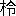

一 過ぎし時代のことを傳え、歴代の天皇これによつて徳教を正しくしたことを説く。
二 この序文は、天皇に奏上する文として書かれているので、この句をはじめすべてその詞づかいがなされる。安萬侶は、太の安麻呂、古事記の撰者、養老七年（七二三）歿。
三 混元以下、中國の宇宙創生説によつて書いている。萬物は形と氣とから成る。形は天地に分かれ、氣は陰陽に分かれる。
四 アメノミナカヌシの神、タカミムスビの神、カムムスビの神の三神が、物を造り出す最初の神となつた。
五 イザナギ、イザナミの二神が、萬物を生み出す親となつた。
六 幽と顯とに以下、イザナギ、イザナミ二神の事蹟。
七 鏡を懸け以下、天照らす大神とスサノヲの命との事蹟。
八 安の河に以下、ニニギの命の事蹟。
九 神武天皇。
一〇 崇神天皇。
一一 仁徳天皇。
一二 成務天皇。
一三 允恭天皇。
二 この序文は、天皇に奏上する文として書かれているので、この句をはじめすべてその詞づかいがなされる。安萬侶は、太の安麻呂、古事記の撰者、養老七年（七二三）歿。
三 混元以下、中國の宇宙創生説によつて書いている。萬物は形と氣とから成る。形は天地に分かれ、氣は陰陽に分かれる。
四 アメノミナカヌシの神、タカミムスビの神、カムムスビの神の三神が、物を造り出す最初の神となつた。
五 イザナギ、イザナミの二神が、萬物を生み出す親となつた。
六 幽と顯とに以下、イザナギ、イザナミ二神の事蹟。
七 鏡を懸け以下、天照らす大神とスサノヲの命との事蹟。
八 安の河に以下、ニニギの命の事蹟。
九 神武天皇。
一〇 崇神天皇。
一一 仁徳天皇。
一二 成務天皇。
一三 允恭天皇。

 悌
悌 詠
詠
 煌として、あきらかに先の代を覩たまふ。ここに天皇詔したまひしく、「朕聞かくは、諸家の
煌として、あきらかに先の代を覩たまふ。ここに天皇詔したまひしく、「朕聞かくは、諸家の
一 天武天皇が帝紀と本辭とを正して稗田の阿禮に授けたことを説く。
二 天武天皇。
三 酉の年の二月に。
四 帝紀は歴代天皇の事を記した書、本辭は前の世の傳えごと。この二種が古事記の材料となつている。
五 アメノウズメの命の子孫。男子説と女子説とがある。
二 天武天皇。
三 酉の年の二月に。
四 帝紀は歴代天皇の事を記した書、本辭は前の世の傳えごと。この二種が古事記の材料となつている。
五 アメノウズメの命の子孫。男子説と女子説とがある。
伏して


和銅五年正月二十八日
正五位の上勳五等 太 の朝臣 安萬侶
一 古事記成立の過程、文章の用意方針。内容の區分を説く。
二 元明天皇、女帝。奈良時代の最初の天皇。
三 七一一年。
四 漢字の表示する意義によつて書くのが、訓によるものであり、漢字の表示する音韻によつて書くのが、音によるものである。歌謠および特殊の詞句は音を用い、地名神名人名も音によるものが多い。外に漢字の訓を訓假字として使つたものが多少ある。
五 讀み方の注意、および内容に關して註が加えられている。
六 固有名詞の類に使用される特殊の文字は、もとのままで改めない。これは材料として文字になつていたものをも使つたことを語る。
七 推古天皇の時代（‐六二八）
八 神武天皇から應神天皇まで。
九 仁徳天皇。
二 元明天皇、女帝。奈良時代の最初の天皇。
三 七一一年。
四 漢字の表示する意義によつて書くのが、訓によるものであり、漢字の表示する音韻によつて書くのが、音によるものである。歌謠および特殊の詞句は音を用い、地名神名人名も音によるものが多い。外に漢字の訓を訓假字として使つたものが多少ある。
五 讀み方の注意、および内容に關して註が加えられている。
六 固有名詞の類に使用される特殊の文字は、もとのままで改めない。これは材料として文字になつていたものをも使つたことを語る。
七 推古天皇の時代（‐六二八）
八 神武天皇から應神天皇まで。
九 仁徳天皇。
次に國
上の件 、五柱の神は別 天 つ神 。
次に成りませる神の名は、國の
上の件、國の常立の神より下 、伊耶那美 の神より前 を、并はせて神世 七代 とまをす。（上の二柱は、獨神おのもおのも一代とまをす。次に雙びます十神はおのもおのも二神を合はせて一代とまをす。）
一 中心、中央の思想の神格表現。空間の表示であるから活動を傳えない。
二 以上二神、生成の思想の神格表現。事物の存在を「生む」ことによつて説明する日本神話にあつて原動力である。タカミは高大、カムは神祕神聖の意の形容語。この二神の活動は、多く傳えられる。
三 對立でない存在。
四 天地の間に溶合した。
五 葦の芽。十分に春になつたことを感じている。
六 葦牙の神格化。神名は男性である。
七 天の確立を意味する神名。
八 名義不明。以下神名によつて、土地の成立、動植物の出現、整備等を表現するらしい。
九 驚きを表現する神名。
一〇 以上二神、誘い出す意味の表現。
二 以上二神、生成の思想の神格表現。事物の存在を「生む」ことによつて説明する日本神話にあつて原動力である。タカミは高大、カムは神祕神聖の意の形容語。この二神の活動は、多く傳えられる。
三 對立でない存在。
四 天地の間に溶合した。
五 葦の芽。十分に春になつたことを感じている。
六 葦牙の神格化。神名は男性である。
七 天の確立を意味する神名。
八 名義不明。以下神名によつて、土地の成立、動植物の出現、整備等を表現するらしい。
九 驚きを表現する神名。
一〇 以上二神、誘い出す意味の表現。
ここに天つ神
ここにその妹
 り逢へ、り逢はむ」とのりたまひて、りたまふ時に、伊耶那美の命まづ「あなにやし、えをとこを八」とのりたまひ、後に伊耶那岐の命「あなにやし、え
り逢へ、り逢はむ」とのりたまひて、りたまふ時に、伊耶那美の命まづ「あなにやし、えをとこを八」とのりたまひ、後に伊耶那岐の命「あなにやし、えここに二柱の神
かれここに降りまして、更にその天の御柱を往き
りたまふこと、先の如くなりき。ここに然ありて後還ります時に、
一 天神の命によつて若い神が降下するのは日本神話の基礎形式の一。祭典の思想に根據を有している。
二 りつぱな矛を賜わつて命を下した。
三 天からの通路である空中の階段。
四 海水をゴロゴロとかきまわして。
五 大阪灣内にある島。今の何島か不明。
六 家屋の中心となる神聖な柱を立てた。
七 結婚しよう。
八 アナニヤシ、感動の表示。エヲトコヲ、愛すべき男だ。ヲは感動の助詞。
九 ヒルのようなよくないものが、不合理な婚姻によつて生まれたとする。
一〇 蟲送りの行事。
一一 四國の阿波の方面の名。この部分は阿波方面に對してわるい感情を表示する。
一二 古代の占法は種々あるが、鹿の肩骨を燒いてヒビの入り方によつて占なうのを重んじ、これをフトマニといつた。これは後に龜の甲を燒くことに變わつた。
一三 淡路島の別名。ワケは若い者の義。
一四 四國の稱。伊豫の方面からいう。
一五 北九州。
一六 誤傳があるのだろう。肥の國（肥前肥後）の外に、日向の別名があげられているのだろうというが、日向を入れると五國になつて、面四つありというのに合わない。
一七 クマ（肥後南部）とソ（薩摩）とを合わせた名。
一八 對馬島。
一九 本州。
二〇 山口縣の屋代島だろう。
二一 大分縣の姫島だろう。
二二 長崎縣の五島。
二三 所在不明。
二 りつぱな矛を賜わつて命を下した。
三 天からの通路である空中の階段。
四 海水をゴロゴロとかきまわして。
五 大阪灣内にある島。今の何島か不明。
六 家屋の中心となる神聖な柱を立てた。
七 結婚しよう。
八 アナニヤシ、感動の表示。エヲトコヲ、愛すべき男だ。ヲは感動の助詞。
九 ヒルのようなよくないものが、不合理な婚姻によつて生まれたとする。
一〇 蟲送りの行事。
一一 四國の阿波の方面の名。この部分は阿波方面に對してわるい感情を表示する。
一二 古代の占法は種々あるが、鹿の肩骨を燒いてヒビの入り方によつて占なうのを重んじ、これをフトマニといつた。これは後に龜の甲を燒くことに變わつた。
一三 淡路島の別名。ワケは若い者の義。
一四 四國の稱。伊豫の方面からいう。
一五 北九州。
一六 誤傳があるのだろう。肥の國（肥前肥後）の外に、日向の別名があげられているのだろうというが、日向を入れると五國になつて、面四つありというのに合わない。
一七 クマ（肥後南部）とソ（薩摩）とを合わせた名。
一八 對馬島。
一九 本州。
二〇 山口縣の屋代島だろう。
二一 大分縣の姫島だろう。
二二 長崎縣の五島。
二三 所在不明。
既に國を生み
この
次に風の神名は
この大山津見の神、野椎の神の
次に生みたまふ神の名は、鳥の
 毘古
毘古
一 以上の神の系列は、家屋の成立を語るものと解せられる。
二 風に對して堪えることを意味するらしい。
三 河口など、海に對する出入口の神。
四 海と河とで分擔して生んだ神。以下水に關する神。アワナギ、アワナミは、動く水の男女の神、ツラナギ、ツラナミは、靜水の男女の神。ミクマリは、水の配分。クヒザモチは水を汲む道具。
五 息の長い男の義。
六 木の間を潛る男の義。
七 山の神と野の神とが生んだ諸神の系列は、山野に霧がかかつて迷うことを表現する。
八 鳥の如く早く輕く行くところの、石のように堅いクスノキの船。
九 穀物の神。この神に關する神話が三五頁［＃「三五頁」は「須佐の男の神」の「穀物の種」］にある。
一〇 吐瀉物。以下排泄物によつて生まれた神は、火を防ぐ力のある神である。
一一 埴土の男女の神。
一二 水の神。
一三 若い生産力の神。
一四 これも穀物の神。以上の神の系列は、野を燒いて耕作する生活を語る。
一五 實數四十神だが、男女一對の神を一として數えれば三十五になる。
二 風に對して堪えることを意味するらしい。
三 河口など、海に對する出入口の神。
四 海と河とで分擔して生んだ神。以下水に關する神。アワナギ、アワナミは、動く水の男女の神、ツラナギ、ツラナミは、靜水の男女の神。ミクマリは、水の配分。クヒザモチは水を汲む道具。
五 息の長い男の義。
六 木の間を潛る男の義。
七 山の神と野の神とが生んだ諸神の系列は、山野に霧がかかつて迷うことを表現する。
八 鳥の如く早く輕く行くところの、石のように堅いクスノキの船。
九 穀物の神。この神に關する神話が三五頁［＃「三五頁」は「須佐の男の神」の「穀物の種」］にある。
一〇 吐瀉物。以下排泄物によつて生まれた神は、火を防ぐ力のある神である。
一一 埴土の男女の神。
一二 水の神。
一三 若い生産力の神。
一四 これも穀物の神。以上の神の系列は、野を燒いて耕作する生活を語る。
一五 實數四十神だが、男女一對の神を一として數えれば三十五になる。
かれここに伊耶那岐の命の
殺さえたまひし
ここにその妹伊耶那美の命を相見まくおもほして、
ここに伊耶那岐の命、
かれその伊耶那美の命に
一 奈良縣磯城郡の天の香具山。神話に實在の地名が出る場合は、大抵その神話の傳えられている地方を語る。
二 うねりのある地形の高み。
三 香具山の麓にあつた埴安の池の水神。泣澤の森そのものを神體としている。
四 廣島縣比婆郡に傳説地がある。
五 十つかみある長い劒。
六 神聖な岩石。以下神の系列によつて鐵鑛を火力で處理して刀劒を得ることを語る。イハサクの神からイハヅツノヲの神まで岩石の神靈。ミカハヤビ、ヒハヤビは火力。タケミカヅチノヲは劒の威力。クラオカミ、クラミツハは水の神靈。クラは溪谷。御刀の手上は、劒のつか。タケミカヅチノヲは五六頁［＃「五六頁」は「天照らす大御神と大國主の神」の「國讓り」］、七四頁［＃「七四頁」は「神武天皇」の「熊野より大和へ」］に神話がある。
七 以下各種の山の神。
八 幅の廣い劒の義。水の神と解せられ、五六頁［＃「五六頁」は「天照らす大御神と大國主の神」の「國讓り」］に神話がある。別名のイツは、威力の意。
九 地下にありとされる空想上の世界。黄泉の文字は漢文から來る。
一〇 宮殿の閉してある戸。殿の騰戸とする傳えもある。
一一 黄泉の國の火で作つた食物を食つたので黄泉の人となつてしまつた。同一の火による團結の思想である。
一二 髮を左右に分けて耳の邊で輪にする。それにさした神聖な櫛。櫛は竹で作り魔よけとして女がさしてくれる。
一三 蛆がわいてゴロゴロ鳴つて。トロロギテとする傳えがあるが誤り。
一四 黄泉の國の見にくいばけものの女。
一五 植物を輪にして魔よけとして髮の上にのせる。
一六 山葡萄。
一七 筍。
一八 黄泉の國の入口にある坂。黄泉の國に向つて下る。墳墓の構造から來ている。
一九 現實にある人間。
二〇 日本書紀には絶妻の誓とある。言葉で戸を立てる。別れの言葉をいう。
二一 道路を追いかける神。
二二 島根縣八束郡。
二 うねりのある地形の高み。
三 香具山の麓にあつた埴安の池の水神。泣澤の森そのものを神體としている。
四 廣島縣比婆郡に傳説地がある。
五 十つかみある長い劒。
六 神聖な岩石。以下神の系列によつて鐵鑛を火力で處理して刀劒を得ることを語る。イハサクの神からイハヅツノヲの神まで岩石の神靈。ミカハヤビ、ヒハヤビは火力。タケミカヅチノヲは劒の威力。クラオカミ、クラミツハは水の神靈。クラは溪谷。御刀の手上は、劒のつか。タケミカヅチノヲは五六頁［＃「五六頁」は「天照らす大御神と大國主の神」の「國讓り」］、七四頁［＃「七四頁」は「神武天皇」の「熊野より大和へ」］に神話がある。
七 以下各種の山の神。
八 幅の廣い劒の義。水の神と解せられ、五六頁［＃「五六頁」は「天照らす大御神と大國主の神」の「國讓り」］に神話がある。別名のイツは、威力の意。
九 地下にありとされる空想上の世界。黄泉の文字は漢文から來る。
一〇 宮殿の閉してある戸。殿の騰戸とする傳えもある。
一一 黄泉の國の火で作つた食物を食つたので黄泉の人となつてしまつた。同一の火による團結の思想である。
一二 髮を左右に分けて耳の邊で輪にする。それにさした神聖な櫛。櫛は竹で作り魔よけとして女がさしてくれる。
一三 蛆がわいてゴロゴロ鳴つて。トロロギテとする傳えがあるが誤り。
一四 黄泉の國の見にくいばけものの女。
一五 植物を輪にして魔よけとして髮の上にのせる。
一六 山葡萄。
一七 筍。
一八 黄泉の國の入口にある坂。黄泉の國に向つて下る。墳墓の構造から來ている。
一九 現實にある人間。
二〇 日本書紀には絶妻の誓とある。言葉で戸を立てる。別れの言葉をいう。
二一 道路を追いかける神。
二二 島根縣八束郡。
ここを以ちて伊耶那岐の大神の詔りたまひしく、「
右の件 、船戸 の神より下、邊津甲斐辨羅の神より前、十二神 は、身に著 けたる物を脱ぎうてたまひしに因りて、生 りませる神なり。
ここに詔りたまはく、「ここに左の御目を洗ひたまふ時に成りませる神の名は、
右の件、八十禍津日 の神より下、速須佐 の男 の命より前、十柱の神一七は、御身を滌ぎたまひしに因りて生 れませる神なり。
この時伊耶那岐の命かれおのもおのもよさし賜へる命のまにま知らしめす中に、速須佐の男の命、依さしたまへる國を知らさずて、
一 大變見にくいきたない世界。
二 九州の諸地方に傳説地があるが不明。アハギは樹名だろうが不明。日本書紀に檍原と書く。
三 道路に立つて惡魔の來るのを追い返す神。柱の形であるから杖によつて成つたという。
四 道路の長さの神。道路そのものに威力ありとする思想。
五 時置師の神とも傳える。時間のかかる意であろう。
六 疲勞の神靈。
七 二股になつている道路の神。
八 口をあけて食う神靈。魔物をである。
九 以下は禊をする土地の説明。
一〇 災禍の神靈。
一一 災禍を拂つてよくする思想の神格化。曲つたものをまつすぐにするという形で表現している。
一二 威力のある女。巫女である。
一三 以下六神、海の神。安曇系と住吉系と二種の神話の混合。
一四 住吉神社の祭神。西方の海岸にこの神の信仰がある。
一五 月の神、男神。日本書紀にはこの神が保食 の神（穀物の神）を殺す神話がある。
一六 暴風の神であり出雲系の英雄でもある。
一七 實數十四神。イヅノメと海神の一組三神とを除けば十神になる。
一八 頸にかけた珠の緒もゆらゆらとゆり鳴らして。
一九 棚の上に安置してある神靈の義。
二〇 夜の領國。神話は傳わらない。
二一 長い髯が胸元までのびるまで泣きわめいた。以下暴風の性質にもとづく敍述。
二二 亂暴な神の物音。暴風のさわぎ。
二三 死んだ母の國。イザナミの神の行つている黄泉の國である地下の堅い土の世界。暴風がみずから地下へ行こうと言つたとする。
二四 神が追い拂つた。暴風を父の神が放逐したとする思想。
二五 眞福寺本には淡海の多賀とする。イザナギの命の信仰は、淡路方面にひろがつていた。
二 九州の諸地方に傳説地があるが不明。アハギは樹名だろうが不明。日本書紀に檍原と書く。
三 道路に立つて惡魔の來るのを追い返す神。柱の形であるから杖によつて成つたという。
四 道路の長さの神。道路そのものに威力ありとする思想。
五 時置師の神とも傳える。時間のかかる意であろう。
六 疲勞の神靈。
七 二股になつている道路の神。
八 口をあけて食う神靈。魔物をである。
九 以下は禊をする土地の説明。
一〇 災禍の神靈。
一一 災禍を拂つてよくする思想の神格化。曲つたものをまつすぐにするという形で表現している。
一二 威力のある女。巫女である。
一三 以下六神、海の神。安曇系と住吉系と二種の神話の混合。
一四 住吉神社の祭神。西方の海岸にこの神の信仰がある。
一五 月の神、男神。日本書紀にはこの神が
一六 暴風の神であり出雲系の英雄でもある。
一七 實數十四神。イヅノメと海神の一組三神とを除けば十神になる。
一八 頸にかけた珠の緒もゆらゆらとゆり鳴らして。
一九 棚の上に安置してある神靈の義。
二〇 夜の領國。神話は傳わらない。
二一 長い髯が胸元までのびるまで泣きわめいた。以下暴風の性質にもとづく敍述。
二二 亂暴な神の物音。暴風のさわぎ。
二三 死んだ母の國。イザナミの神の行つている黄泉の國である地下の堅い土の世界。暴風がみずから地下へ行こうと言つたとする。
二四 神が追い拂つた。暴風を父の神が放逐したとする思想。
二五 眞福寺本には淡海の多賀とする。イザナギの命の信仰は、淡路方面にひろがつていた。
かれここに速須佐の男の命、

ここに天照らす大御神、
かれその先に生れませる神、
かれこの後に
一 暴風の襲來する有樣で、歴史的には出雲族の襲來を語る。
二 男裝される。
三 大きな曲玉の澤山を緒に貫いたもの。曲玉は、玉の威力の發動の思想を表示する。
四 千本の矢を入れて背負う武具。
五 胸のたいらな所。
六 威勢のよい音のする鞆。トモは皮で球形に作り左の手にはめて弓を引いた時にそれに當つて音が立つようにする武具。
七 威勢のよい叫び。
八 神に誓つて神意を伺う儀式。種々の方法があり夢が多く使われる。ここは生まれた子の男女の別によつて神意を伺う。
九 高天の原にありとする川。滋賀縣の野洲 川だともいう。明日香川の古名か。
一〇 玉の音もさやかに。
一一 神聖な水の井。
一二 以上の行爲は、身を清めるために行う。劒を振つて水を清めてその水を口に含んで吐く霧の中に神靈が出現するとする。以下は劒が玉に變つているだけ。
一三 以上の三女神は福岡縣の宗像 神社の神。
一四 皇室の御祖先と傳える。
一五 出雲氏等の祖先。
一六 主として近畿地方に居住した諸氏の祖先。各種の系統の祖先が、この行事によつて出現したとするのは民族が同一祖から出たとする思想である。
一七 出雲の國の熊野神社の神。
一八 福岡縣の海上日本海の沖の島にある。
一九 福岡縣の海上大島にある。
二 男裝される。
三 大きな曲玉の澤山を緒に貫いたもの。曲玉は、玉の威力の發動の思想を表示する。
四 千本の矢を入れて背負う武具。
五 胸のたいらな所。
六 威勢のよい音のする鞆。トモは皮で球形に作り左の手にはめて弓を引いた時にそれに當つて音が立つようにする武具。
七 威勢のよい叫び。
八 神に誓つて神意を伺う儀式。種々の方法があり夢が多く使われる。ここは生まれた子の男女の別によつて神意を伺う。
九 高天の原にありとする川。滋賀縣の
一〇 玉の音もさやかに。
一一 神聖な水の井。
一二 以上の行爲は、身を清めるために行う。劒を振つて水を清めてその水を口に含んで吐く霧の中に神靈が出現するとする。以下は劒が玉に變つているだけ。
一三 以上の三女神は福岡縣の
一四 皇室の御祖先と傳える。
一五 出雲氏等の祖先。
一六 主として近畿地方に居住した諸氏の祖先。各種の系統の祖先が、この行事によつて出現したとするのは民族が同一祖から出たとする思想である。
一七 出雲の國の熊野神社の神。
一八 福岡縣の海上日本海の沖の島にある。
一九 福岡縣の海上大島にある。
ここに速須佐の男の命、天照らす大御神に白したまひしく、「我が心
のの五百津の御統の玉を取りここに天照らす大御神
一 自分が清らかだから女子を得たとする。日本書紀では反對に、男子が生まれたらスサノヲの命が潔白であるとしている。古事記の神話が女子によつて語られたとする證明になるところ。オシホミミの命の出現によつて勝つたとするのが原形だろう。
二 勝にまかせて。
三 田の畦を破り溝を埋め、また御食事をなされる宮殿に不淨の物をまき散らすので、皆暴風の災害である。
四 清淨な機おり場。
五 これも暴風の災害。
六 機おる時に横絲を卷いて縱絲の中をくぐらせる道具。
七 イハは堅固である意を現すためにつけていう。墳墓の入口の石の戸とする説もある。
八 永久の夜が續く。
九 思慮智惠の神格化。
一〇 鷄。常世は、恒久の世界の義で、空想上の世界から轉じて海外をいう。
一一 香具山の鹿の肩の骨をそつくり拔いて。
一二 樹名、カバノキ。これで鹿骨を燒く。
一三 占いをし適合させて。卜占によつて祭の實行方法を定める。
一四 香具山の繁つた木を根と共に掘つて。マサカキは繁つた常緑木で、今いうツバキ科の樹名サカキに限らない。神聖な清淨な木を引く意味で、山から採つてくる。
一五 サカキに玉と鏡と麻楮をつけるのは、神靈を招く意の行事で、他の例では劒をもつける。シラニギテはコウゾ、アヲニギテはアサ。
一六 力の神格。
一七 ヒカゲカズラを手次 にかけ、マサキノカズラをカヅラにする。神がかりをするための用意。
一八 小竹の葉をつけて手で持つ。
一九 中のうつろの箱のようなものを伏せて。
二〇 シメ繩。出入禁止の意の表示。
二一 罪を犯した者に多くの物を出させる。
二 勝にまかせて。
三 田の畦を破り溝を埋め、また御食事をなされる宮殿に不淨の物をまき散らすので、皆暴風の災害である。
四 清淨な機おり場。
五 これも暴風の災害。
六 機おる時に横絲を卷いて縱絲の中をくぐらせる道具。
七 イハは堅固である意を現すためにつけていう。墳墓の入口の石の戸とする説もある。
八 永久の夜が續く。
九 思慮智惠の神格化。
一〇 鷄。常世は、恒久の世界の義で、空想上の世界から轉じて海外をいう。
一一 香具山の鹿の肩の骨をそつくり拔いて。
一二 樹名、カバノキ。これで鹿骨を燒く。
一三 占いをし適合させて。卜占によつて祭の實行方法を定める。
一四 香具山の繁つた木を根と共に掘つて。マサカキは繁つた常緑木で、今いうツバキ科の樹名サカキに限らない。神聖な清淨な木を引く意味で、山から採つてくる。
一五 サカキに玉と鏡と麻楮をつけるのは、神靈を招く意の行事で、他の例では劒をもつける。シラニギテはコウゾ、アヲニギテはアサ。
一六 力の神格。
一七 ヒカゲカズラを
一八 小竹の葉をつけて手で持つ。
一九 中のうつろの箱のようなものを伏せて。
二〇 シメ繩。出入禁止の意の表示。
二一 罪を犯した者に多くの物を出させる。
また
一 この一節は插入神話である。文章が前の章からよく接續しないことに注意。オホゲツヒメは穀物の女神。既出。
二 うまい物。
二 うまい物。
かれ
ここに速須佐の男の命、その
 ごとに酒船一〇を置きて、船ごとにその八鹽折の酒を盛りて待たさね」とのりたまひき。かれ告りたまへるまにまにして、かく
ごとに酒船一〇を置きて、船ごとにその八鹽折の酒を盛りて待たさね」とのりたまひき。かれ告りたまへるまにまにして、かくかれここを以ちてその速須佐の男の命、宮造るべき
や雲立つ 出雲八重垣。
妻隱 みに 八重垣作る。
その八重垣を一四。 （歌謠番號一）
ここにその足名椎の神をその八重垣を一四。 （歌謠番號一）
一 島根縣仁多郡、斐伊川の上流船通山。
二 日本書紀に奇稻田姫とある。
三 強暴な者の譬喩。また出水としそれを處理して水田を得た意の神話ともする。コシは、島根縣内の地名説もあるが、北越地方の義とすべきである。
四 タンバホオズキ。
五 身長が、谷八つ、高み八つを越える。
六 血がしたたつて。
七 女が魂をこめた櫛を男のミヅラにさす。これは婚姻の風習で、その神祕な表現。
八 濃い酒を作つて。
九 サズキは物をのせる臺。古代は綱で材木を結んで作るから、結うという。
一〇 酒の入物。フネは箱状のもの。
一一 ツムハは語義不明。都牟刈とする傳えもある。
一二 後にヤマトタケルの命が野の草を薙いで火難を免れたから、クサナギの劒という。もと叢雲 の劒という。三種の神器の一。
一三 島根縣大原郡。
一四 や雲立つは枕詞。多くの雲の立つ意。八重垣は、幾重もの壁や垣の意で宮殿をいう。最後のヲは、間投の助詞。
二 日本書紀に奇稻田姫とある。
三 強暴な者の譬喩。また出水としそれを處理して水田を得た意の神話ともする。コシは、島根縣内の地名説もあるが、北越地方の義とすべきである。
四 タンバホオズキ。
五 身長が、谷八つ、高み八つを越える。
六 血がしたたつて。
七 女が魂をこめた櫛を男のミヅラにさす。これは婚姻の風習で、その神祕な表現。
八 濃い酒を作つて。
九 サズキは物をのせる臺。古代は綱で材木を結んで作るから、結うという。
一〇 酒の入物。フネは箱状のもの。
一一 ツムハは語義不明。都牟刈とする傳えもある。
一二 後にヤマトタケルの命が野の草を薙いで火難を免れたから、クサナギの劒という。もと
一三 島根縣大原郡。
一四 や雲立つは枕詞。多くの雲の立つ意。八重垣は、幾重もの壁や垣の意で宮殿をいう。最後のヲは、間投の助詞。
その
一 隱れた處に事を起して。婚姻して。以下スサノヲの命の子孫の系譜であるが大年の神とウカノミタマの神とは穀物の神で下の五二頁［＃「五二頁」は「大國主の神」の「大年の神の系譜」］に出る系譜の準備になる。その條參照。
二 出雲國風土記に諸地方の土地を引いて來たという國引の神話を傳える八束水臣津野の命。
三 古代出雲の英雄で國土の神靈の意。代々オホクニヌシでありその一人が英雄であつたのだろう。以下の別名はそれぞれその名による神話がありすべてを同一神と解したものであろう。
二 出雲國風土記に諸地方の土地を引いて來たという國引の神話を傳える八束水臣津野の命。
三 古代出雲の英雄で國土の神靈の意。代々オホクニヌシでありその一人が英雄であつたのだろう。以下の別名はそれぞれその名による神話がありすべてを同一神と解したものであろう。
かれこの大國主の神の

ここに
一 多くの神。神話にいう兄弟は、眞實の兄弟ではない。
二 鳥取縣八頭郡八上の地にいた姫。
三 七福神の大黒天を大國主の神と同神とする説のあるのは、大國と大黒と字音が同じなのと、ここに袋を背負つたことがあるからであるが、大黒天はもとインドの神で別である。
四 島根縣氣高郡末恒村の日本海に出た岬角。
五 日本海の隱岐の島。ただし氣多の前の海中にも傳説地がある。
六 フカの類。やがてその知識に、蛇、龜などの要素を取り入れて想像上の動物として發達した。フカの實際を知らない者が多かつたからである。
七 カマの花粉。
二 鳥取縣八頭郡八上の地にいた姫。
三 七福神の大黒天を大國主の神と同神とする説のあるのは、大國と大黒と字音が同じなのと、ここに袋を背負つたことがあるからであるが、大黒天はもとインドの神で別である。
四 島根縣氣高郡末恒村の日本海に出た岬角。
五 日本海の隱岐の島。ただし氣多の前の海中にも傳説地がある。
六 フカの類。やがてその知識に、蛇、龜などの要素を取り入れて想像上の動物として發達した。フカの實際を知らない者が多かつたからである。
七 カマの花粉。
かれここに八十神
一 鳥取縣西伯郡天津村。
二 母の神。
三 赤貝の汁をしぼつて蛤 の貝に受け入れて母の乳汁として塗つた。古代の火傷の療法である。
二 母の神。
三 赤貝の汁をしぼつて
ここに八十神見てまた欺きて、山に
らしつ。ここに出づる所を知らざる間に、鼠來ていはく、「内はほらほら、ここにその
かれその八上比賣は先の
一 クサビ形の矢。氷目矢とあるも同じ。
二 紀伊の國（和歌山縣）
三 家屋の神。イザナギ、イザナミの生んだ子の中にあつた。ただしスサノヲの命の子とする説がある。
四 既出、地下の國。
五 互に見合うこと。
六 古代建築にはムロ型とス型とある。ムロは穴を掘つて屋根をかぶせた形のもので濕氣の多い地では蟲のつくことが多い。スは足をつけて高く作る。どちらも原住地での習俗を移したものだろうが、ムロ型は亡びた。
七 蛇を支配する力のあるヒレ。ヒレは、白い織物で女子が頸にかける。これを振ることによつて威力が發生する。次のヒレも同じ。
八 射ると鳴りひびくように作つた矢。
九 入口は狹いが内部は廣い。古墳のあとだろうという。
一〇 葬式の道具。
一一 柱間の數の多い大きな室。
一二 五百人で引くほどの巨石。
一三 生命の感じられる大刀弓矢。
一四 美しいりつぱな琴。
一五 親愛の第二人稱。
一六 現實にある國土の神靈。
一七 島根縣出雲市出雲大社の東北の御埼山。
一八 壯大な宮殿建築をする意の常用句。地底の石に柱をしつかと建て、空中に高く千木をあげて作る。ヒギ、チギともいう。屋上に交叉して突出している材。今では神社建築に見られる。
一九 國土經營をはじめた。
二〇 婚姻した。
二 紀伊の國（和歌山縣）
三 家屋の神。イザナギ、イザナミの生んだ子の中にあつた。ただしスサノヲの命の子とする説がある。
四 既出、地下の國。
五 互に見合うこと。
六 古代建築にはムロ型とス型とある。ムロは穴を掘つて屋根をかぶせた形のもので濕氣の多い地では蟲のつくことが多い。スは足をつけて高く作る。どちらも原住地での習俗を移したものだろうが、ムロ型は亡びた。
七 蛇を支配する力のあるヒレ。ヒレは、白い織物で女子が頸にかける。これを振ることによつて威力が發生する。次のヒレも同じ。
八 射ると鳴りひびくように作つた矢。
九 入口は狹いが内部は廣い。古墳のあとだろうという。
一〇 葬式の道具。
一一 柱間の數の多い大きな室。
一二 五百人で引くほどの巨石。
一三 生命の感じられる大刀弓矢。
一四 美しいりつぱな琴。
一五 親愛の第二人稱。
一六 現實にある國土の神靈。
一七 島根縣出雲市出雲大社の東北の御埼山。
一八 壯大な宮殿建築をする意の常用句。地底の石に柱をしつかと建て、空中に高く千木をあげて作る。ヒギ、チギともいう。屋上に交叉して突出している材。今では神社建築に見られる。
一九 國土經營をはじめた。
二〇 婚姻した。
この
八島國 妻
遠遠し
さ
婚ひに あり通はせ、
大刀が緒も いまだ解かずて、
引こづらひ
青山に

さ
庭つ鳥
うれたくも九 鳴くなる鳥か。
この鳥も うち
いしたふや一〇
事の 語りごとも こをば一二。 （歌謠番號二）
ぬえくさの一三
今こそは
後は
命は な
いしたふや 天馳使、
事の 語りごとも こをば。 （歌謠番號三）
青山に 日が隱らば、
ぬばたまの一六 夜は出でなむ。
朝日の
沫雪の一八 わかやる胸を
そ
眞玉手 玉手差し
あやに な戀ひきこし一九。
八千矛の 神の命。
事の 語りごとも こをば。 （歌謠番號四）
またその神の
ぬばたまの 黒き御衣 を
まつぶさに 取り裝 ひ二二
奧 つ鳥二三 胸 見る時、
羽 たたぎ二四も これは宜 はず、
邊 つ浪 そに脱き棄 て、
鳥 の二五 青き御衣 を
まつぶさに 取り裝ひ
奧つ鳥 胸見る時、
羽たたぎも こも宜 はず、
邊つ浪 そに脱き棄 て、
山縣二六に蒔 きし あたねつき二七
染 木が汁 に 染衣 を
まつぶさに 取り裝ひ
奧つ鳥 胸見る時、
羽たたぎも此 しよろし。
いとこやの二八 妹の命二九、
群 鳥の三〇 吾 が群れ往 なば、
引け鳥三一の 吾が引け往なば、
泣かじとは汝 は言ふとも、
山跡 の 一本 すすき
項 傾 し三二 汝が泣かさまく三三
朝雨の さ三四霧に立 たむぞ。
若草の三五嬬 の命。
事の 語りごとも こをば。 （歌謠番號五）
ここにそのまつぶさに 取り
まつぶさに 取り裝ひ
奧つ鳥 胸見る時、
羽たたぎも こも
邊つ浪 そに脱き
山縣二六に
まつぶさに 取り裝ひ
奧つ鳥 胸見る時、
羽たたぎも
いとこやの二八 妹の命二九、
引け鳥三一の 吾が引け往なば、
泣かじとは
朝雨の さ三四霧に
若草の三五
事の 語りごとも こをば。 （歌謠番號五）
八千矛の 神の命や、
吾 が大國主。
汝 こそは 男 にいませば、
うち
かき
若草の嬬 持たせらめ三九。
吾 はもよ 女 にしあれば、
汝 を除 て四〇 男 は無し。
汝 を除て 夫 は無し。
文垣 の ふはやが下に四一、
蒸被 柔 が下に四二、
被 さやぐが下に四三、
沫雪 の わかやる胸を
綱 の 白き臂
そ叩 き 叩きまながり四四
ま玉手 玉手差し纏 き
股長 に 寢 をしなせ。
豐御酒 たてまつらせ四五。 （歌謠番號六）
かく歌ひて、すなはちうち
かき
若草の
そ
ま玉手 玉手差し
一 多くの武器のある神の義。大國主の神の別名。三八頁［＃「三八頁」は「須佐の男の命」の「系譜」］參照。
二 北越の沼河の地の姫。ヌナカハは今の糸魚川町附近だという。
三 男子が夜間女子の家を訪れるのが古代の婚姻の風習である。
四 ヨバヒは、呼ぶ義で婚姻を申し入れる意。サは接頭語。アリタタシは、お立ちになつて。動詞の上につけるアリは在りつつの意。タタシは立つの敬語。
五 オスヒをもまだ解かないのに。オスヒは通例の服裝の上に著る衣服。禮裝、旅裝などに使用する。トカネは解かないのにの意。
六 ナスは寢るの敬語。ヤは感動の助詞で調子をつけるために使う。
七 押しゆすぶつて。
八 今トラツグミという鳥。夜間飛んで鳴く。
九 歎かわしいことに。
一〇 イ下フで、下方にいる意だろう。イは接頭語。ヤは感動の助詞。
一一 走り使いをする部族。アマは神聖なの意につける。この種の歌を語り傳える部族。
一二 この事をば。この通りです。
一三 譬喩による枕詞。なえた草のような。
一四 水鳥です。おちつかない譬喩。
一五 おなくなりなさるな。
一六 譬喩による枕詞。カラスオウギの實は黒いから夜に冠する。
一七 同前。楮で作つた綱は白い。
一八 同前。アワのような大きな雪。
一九 たいへんに戀をなさいますな。
二〇 第二の妻に對する憎み。
二一 夫の神。
二二 十分に著用して。
二三 譬喩による枕詞。水鳥のように胸をつき出して見る。
二四 奧つ鳥と言つたので、その縁でいう。身のこなし。
二五 譬喩による枕詞。カワセミ。青い鳥。
二六 山の料地。
二七 アタネは、アカネに同じというが不明。アカネはアカネ科の蔓草。根をついてアカネ色の染料をとる。
二八 イトコは親愛なる人。ヤは接尾語。
二九 女子の敬稱。
三〇 譬喩による枕詞。
三一 同前。空とおく引き去る鳥。
三二 首をかしげて。うなだれて。
三三 お泣きになることは。マクは、ムコトに相當する。
三四 眞福寺本、サに當る字が無い。
三五 譬喩による枕詞。
三六 このミルは、原文「微流」。微は、古代のミの音聲二種のうちの乙類に屬し、甲類の見るのミの音聲と違う。それでる意であり、ここはつているの意有坂博士で次の語を修飾する。
三七 シマは水面に臨んだ土地。はなれ島には限らない。
三八 磯の突端のどこでも。
三九 お持ちになつているでしよう。モタセ、持ツの敬語の命令形。ラ、助動詞の未然形。メ、助動詞ムの已然形で、上の係助詞コソを受けて結ぶ。
四〇 汝をおいては。
四一 織物のトバリのふわふわした下で。
四二 あたたかい寢具のやわらかい下で。
四三 楮の衾のざわざわする下で。
四四 叩いて抱きあい。
四五 めしあがれ。奉るの敬語の命令形。
四六 酒盃をとりかわして約束して。
四七 首に手をかけて。
四八 以上の歌の名稱で、以下この種の名稱が多く出る。これは歌曲として傳えられたのでその歌曲としての名である。この八千矛の神の贈答の歌曲は舞を伴なつていたらしい。
二 北越の沼河の地の姫。ヌナカハは今の糸魚川町附近だという。
三 男子が夜間女子の家を訪れるのが古代の婚姻の風習である。
四 ヨバヒは、呼ぶ義で婚姻を申し入れる意。サは接頭語。アリタタシは、お立ちになつて。動詞の上につけるアリは在りつつの意。タタシは立つの敬語。
五 オスヒをもまだ解かないのに。オスヒは通例の服裝の上に著る衣服。禮裝、旅裝などに使用する。トカネは解かないのにの意。
六 ナスは寢るの敬語。ヤは感動の助詞で調子をつけるために使う。
七 押しゆすぶつて。
八 今トラツグミという鳥。夜間飛んで鳴く。
九 歎かわしいことに。
一〇 イ下フで、下方にいる意だろう。イは接頭語。ヤは感動の助詞。
一一 走り使いをする部族。アマは神聖なの意につける。この種の歌を語り傳える部族。
一二 この事をば。この通りです。
一三 譬喩による枕詞。なえた草のような。
一四 水鳥です。おちつかない譬喩。
一五 おなくなりなさるな。
一六 譬喩による枕詞。カラスオウギの實は黒いから夜に冠する。
一七 同前。楮で作つた綱は白い。
一八 同前。アワのような大きな雪。
一九 たいへんに戀をなさいますな。
二〇 第二の妻に對する憎み。
二一 夫の神。
二二 十分に著用して。
二三 譬喩による枕詞。水鳥のように胸をつき出して見る。
二四 奧つ鳥と言つたので、その縁でいう。身のこなし。
二五 譬喩による枕詞。カワセミ。青い鳥。
二六 山の料地。
二七 アタネは、アカネに同じというが不明。アカネはアカネ科の蔓草。根をついてアカネ色の染料をとる。
二八 イトコは親愛なる人。ヤは接尾語。
二九 女子の敬稱。
三〇 譬喩による枕詞。
三一 同前。空とおく引き去る鳥。
三二 首をかしげて。うなだれて。
三三 お泣きになることは。マクは、ムコトに相當する。
三四 眞福寺本、サに當る字が無い。
三五 譬喩による枕詞。
三六 このミルは、原文「微流」。微は、古代のミの音聲二種のうちの乙類に屬し、甲類の見るのミの音聲と違う。それで
る意であり、ここはつているの意有坂博士で次の語を修飾する。三七 シマは水面に臨んだ土地。はなれ島には限らない。
三八 磯の突端のどこでも。
三九 お持ちになつているでしよう。モタセ、持ツの敬語の命令形。ラ、助動詞の未然形。メ、助動詞ムの已然形で、上の係助詞コソを受けて結ぶ。
四〇 汝をおいては。
四一 織物のトバリのふわふわした下で。
四二 あたたかい寢具のやわらかい下で。
四三 楮の衾のざわざわする下で。
四四 叩いて抱きあい。
四五 めしあがれ。奉るの敬語の命令形。
四六 酒盃をとりかわして約束して。
四七 首に手をかけて。
四八 以上の歌の名稱で、以下この種の名稱が多く出る。これは歌曲として傳えられたのでその歌曲としての名である。この八千矛の神の贈答の歌曲は舞を伴なつていたらしい。
かれこの大國主の神、
大國主の神、また
右の件 、八島士奴美 の神より下、遠津山岬帶 の神より前、十七世 の神といふ。
一 既出三〇頁［＃「三〇頁」は「天照らす大神と須佐の男の命」の「誓約」］參照。
二 以上二神、五七頁［＃「五七頁」は「天照らす大御神と大國主の神」の「國讓り」］に神話がある。
三 光りかがやく姫の義。美しい姫。
四 奈良縣南葛城郡葛城村にある神社の神。
五 系統不明。
六 五七頁［＃「五七頁」は「天照らす大御神と大國主の神」の「國讓り」］に神話がある。その條參照。
七 鳥耳の神、鳥甘の神とする傳えもある。
八 誤りがあつて、もと何の神の女の何とあつたらしいが不明。
九 水の神。
二 以上二神、五七頁［＃「五七頁」は「天照らす大御神と大國主の神」の「國讓り」］に神話がある。
三 光りかがやく姫の義。美しい姫。
四 奈良縣南葛城郡葛城村にある神社の神。
五 系統不明。
六 五七頁［＃「五七頁」は「天照らす大御神と大國主の神」の「國讓り」］に神話がある。その條參照。
七 鳥耳の神、鳥甘の神とする傳えもある。
八 誤りがあつて、もと何の神の女の何とあつたらしいが不明。
九 水の神。
かれ大國主の神、出雲の
一 島根縣八束郡美保の岬。
二 波の高みに乘つて。
三 カガミはガガイモ科の蔓草。ガガイモ。その果實は莢でありわれると白い毛のある果實が飛ぶ。それをもとにした神話。
四 蛾の皮をそつくり剥いで。
五 ひきがえる。谷潛りの義。
六 かがし。こわれた男の義。
七 海外の國。三三頁［＃「三三頁」は「天照らす大神と須佐の男の命」の「天の岩戸」］脚註參照。
八 かがしに同じ。
二 波の高みに乘つて。
三 カガミはガガイモ科の蔓草。ガガイモ。その果實は莢でありわれると白い毛のある果實が飛ぶ。それをもとにした神話。
四 蛾の皮をそつくり剥いで。
五 ひきがえる。谷潛りの義。
六 かがし。こわれた男の義。
七 海外の國。三三頁［＃「三三頁」は「天照らす大神と須佐の男の命」の「天の岩戸」］脚註參照。
八 かがしに同じ。
ここに大國主の神愁へて告りたまはく、「吾獨して、
一 わたしをよく祭つたなら。神が現れていう時のきまつた詞。
二 大和の國の東方の青い山の上に祭れ。
三 奈良縣磯城郡三輪山の大神 神社の神。その神社の起原神話。
二 大和の國の東方の青い山の上に祭れ。
三 奈良縣磯城郡三輪山の
かれその大年の神一、
上の件、大年の神の子、大國御魂の神より下、大土の神より前、并せて十六神 。
羽山戸の神、
上の件、羽山戸の神の子、若山咋の神より下、若室葛根の神より前、并はせて八神。
一 穀物のみのりの神靈。三八頁［＃「三八頁」は「須佐の男の命」の「系譜」］に出た。この神の系譜は、穀物の耕作の經過の表示。
二 これも穀物のみのりの神。
三 滋賀縣滋賀郡坂本の日枝神社。
四 京都市右京區にある松尾神社。
五 以上二神、家の敷地の神。祈年祭の祝詞に見える。
二 これも穀物のみのりの神。
三 滋賀縣滋賀郡坂本の日枝神社。
四 京都市右京區にある松尾神社。
五 以上二神、家の敷地の神。祈年祭の祝詞に見える。
天照らす大御神の命もちて、「豐葦原の
ここを以ちて高御産巣日の神、天照らす大御神、また諸の神たちに問ひたまはく、「葦原の中つ國に遣はせる天の菩比の神、久しく
かれここに天照らす大御神、高御産巣日の神、また諸の
かれここに
かれ天若日子が
この時
天なるや二九 弟棚機 三〇の
うながせる 玉の御統 三一、
御統に あな玉はや三二。
み谷 二 わたらす三三
阿遲志貴高日子根 の神ぞ。 （歌謠番號七）
この歌はうながせる 玉の
御統に あな玉はや三二。
み
一 日本國の美稱。ゆたかな葦原で永久に穀物のよく生育する國の義。
二 たいへん騷いでいる。アリナリは古い語法。ラ行變格動詞の終止形にナリが接續している。
三 この神が加わるのは思想的な意味からである。
四 日本國。葦原の中心である國。
五 暴威を振う亂暴な土地の神。
六 誓約の條に出現した神。出雲氏の祖先神で、出雲氏の方ではよく活躍したという。古事記日本書紀は中臣氏系統の傳來が主になつているのでわるくいう。
七 天の土地の神靈。
八 天から來た若い男。傳説上の人物として後世の物語にも出る。
九 鹿の靈威のついている弓。
一〇 大きな羽をつけた矢。
一一 キギシの鳥名はその鳴聲によつていう。よつて逆にその名を鳴く女の意にいう。
一二 神聖な桂樹。野鳥である雉子などが門口の樹に來て鳴くのを氣にして何かのしるしだろうとする。
一三 實相を探る女。巫女で鳥の鳴聲などを判斷する。
一四 前に出た弓矢。ハジ弓はハジの木の弓。カク矢は鹿兒矢で鹿の靈威のついている矢。
一五 タカミムスビの神の神靈の宿る所についていうのだろう。
一六 曲れで、災難あれの意になる。
一七胡床 とする傳えもある。
一八 ひたすらの使、行つたきりの使。
一九 風と共に。
二〇 天における天若日子の妻子。
二一 葬式は別に家を作つて行う風習である。
二二 食物を入れた器を持つて行く者。
二三 ホウキで穢を拂う意である。
二四 食物を作る人。
二五 臼でつく女。
二六 葬式の時に連日連夜歌舞してけがれを拂う風習である。
二七 友だちだから。
二八 岐阜縣長良川の上流。
二九 ヤは間投の助詞。
三〇 若い機おり姫。機おりは女子の技藝として尊ばれていた。
三一 頸にかけている緒に貫いた玉。
三二 大きな珠。ハヤは感動を示す。
三三 谷を二つ同時に渡る。ミは美稱。
三四 歌曲の名。
二 たいへん騷いでいる。アリナリは古い語法。ラ行變格動詞の終止形にナリが接續している。
三 この神が加わるのは思想的な意味からである。
四 日本國。葦原の中心である國。
五 暴威を振う亂暴な土地の神。
六 誓約の條に出現した神。出雲氏の祖先神で、出雲氏の方ではよく活躍したという。古事記日本書紀は中臣氏系統の傳來が主になつているのでわるくいう。
七 天の土地の神靈。
八 天から來た若い男。傳説上の人物として後世の物語にも出る。
九 鹿の靈威のついている弓。
一〇 大きな羽をつけた矢。
一一 キギシの鳥名はその鳴聲によつていう。よつて逆にその名を鳴く女の意にいう。
一二 神聖な桂樹。野鳥である雉子などが門口の樹に來て鳴くのを氣にして何かのしるしだろうとする。
一三 實相を探る女。巫女で鳥の鳴聲などを判斷する。
一四 前に出た弓矢。ハジ弓はハジの木の弓。カク矢は鹿兒矢で鹿の靈威のついている矢。
一五 タカミムスビの神の神靈の宿る所についていうのだろう。
一六 曲れで、災難あれの意になる。
一七
一八 ひたすらの使、行つたきりの使。
一九 風と共に。
二〇 天における天若日子の妻子。
二一 葬式は別に家を作つて行う風習である。
二二 食物を入れた器を持つて行く者。
二三 ホウキで穢を拂う意である。
二四 食物を作る人。
二五 臼でつく女。
二六 葬式の時に連日連夜歌舞してけがれを拂う風習である。
二七 友だちだから。
二八 岐阜縣長良川の上流。
二九 ヤは間投の助詞。
三〇 若い機おり姫。機おりは女子の技藝として尊ばれていた。
三一 頸にかけている緒に貫いた玉。
三二 大きな珠。ハヤは感動を示す。
三三 谷を二つ同時に渡る。ミは美稱。
三四 歌曲の名。
ここに天照らす大御神の詔りたまはく、「またいづれの神を遣はして
かれここに天の迦久の神を使はして、天の尾羽張の神に問ひたまふ時に答へ白さく、「
ここに天の鳥船の神四を建御雷の神に副へて遣はす。ここを以ちてこの
かれここにその大國主の神に問ひたまはく、「今汝が子事代主の神かく白しぬ。また白すべき子ありや」ととひたまひき。ここにまた白さく、「また我が子

かれ更にまた還り來て、その大國主の神に問ひたまひしく、「汝が子ども事代主の神、建御名方の神
 手
手
一 イザナギの命の劒の神靈。水神。二四頁［＃「二四頁」は「伊耶那岐の命と伊耶那美の命」の「黄泉の國」］參照。
二 鹿の神靈。
三 二四頁［＃「二四頁」は「伊耶那岐の命と伊耶那美の命」の「黄泉の國」］參照。
四 二二頁［＃「二二頁」は「伊耶那岐の命と伊耶那美の命」の「神々の生成」］參照。
五 島根縣出雲市附近の海岸。伊那佐の小濱とする傳えもある。日本書紀に五十田狹之小汀 。
六 波の高みに劒先を上にして立てて。
七 言語に現れる神靈。大事を決するのに神意を伺い、その神意が言語によつて現れたことをこの神の言として傳える。八重は榮える意に冠する。
八 鳥を狩すること。
九 神意を述べ終つて、海を渡つて來た乘物を傾けて、逆手を打つて青い樹枝の垣に隱れた。逆手を打つは、手を下方に向けて打つことで呪術を行う時にする。青柴垣は神靈の座所。神靈が託宣をしてもとの神座に歸つたのである。
一〇 長野縣諏訪郡諏訪神社上社の祭神。この神に關することは日本書紀に無い。插入説話である。
一一 千人で引くような巨岩。
一二 手のつかみ合いをするのである。
一三 立つている氷のように感ずる。
一四 長野縣の諏訪湖。
一五 天皇がその位におつきになる尊い宮殿のように。神が宮殿造營を請求するのは託宣の定型の一である。
一六 枕詞。
一七 多くある物のすみに隱れておりましよう。
一八 指導者。
一九 島根縣出雲市の海岸。
二〇 宮殿。出雲大社のこと。その鎭座縁起。
二一 料理人。
二二 尊い御食事。
二三 海底の土を清淨としそれを取つて祭具を作る。
二四 多數の平たい皿。
二五 海藻の堅い部分を臼と杵とにして摩擦して火を作つて。
二六 富み榮える新築の家の煤のように長く垂れるほどに火をたき。
二七 楮の長い繩を延ばして。
二八 口の大きく、尾ひれの大きい鱸。
二九 魚のたわむ形容。さき竹のは枕詞。
三〇 尊い御馳走。
二 鹿の神靈。
三 二四頁［＃「二四頁」は「伊耶那岐の命と伊耶那美の命」の「黄泉の國」］參照。
四 二二頁［＃「二二頁」は「伊耶那岐の命と伊耶那美の命」の「神々の生成」］參照。
五 島根縣出雲市附近の海岸。伊那佐の小濱とする傳えもある。日本書紀に
六 波の高みに劒先を上にして立てて。
七 言語に現れる神靈。大事を決するのに神意を伺い、その神意が言語によつて現れたことをこの神の言として傳える。八重は榮える意に冠する。
八 鳥を狩すること。
九 神意を述べ終つて、海を渡つて來た乘物を傾けて、逆手を打つて青い樹枝の垣に隱れた。逆手を打つは、手を下方に向けて打つことで呪術を行う時にする。青柴垣は神靈の座所。神靈が託宣をしてもとの神座に歸つたのである。
一〇 長野縣諏訪郡諏訪神社上社の祭神。この神に關することは日本書紀に無い。插入説話である。
一一 千人で引くような巨岩。
一二 手のつかみ合いをするのである。
一三 立つている氷のように感ずる。
一四 長野縣の諏訪湖。
一五 天皇がその位におつきになる尊い宮殿のように。神が宮殿造營を請求するのは託宣の定型の一である。
一六 枕詞。
一七 多くある物のすみに隱れておりましよう。
一八 指導者。
一九 島根縣出雲市の海岸。
二〇 宮殿。出雲大社のこと。その鎭座縁起。
二一 料理人。
二二 尊い御食事。
二三 海底の土を清淨としそれを取つて祭具を作る。
二四 多數の平たい皿。
二五 海藻の堅い部分を臼と杵とにして摩擦して火を作つて。
二六 富み榮える新築の家の煤のように長く垂れるほどに火をたき。
二七 楮の長い繩を延ばして。
二八 口の大きく、尾ひれの大きい鱸。
二九 魚のたわむ形容。さき竹のは枕詞。
三〇 尊い御馳走。
ここに天照らす大御神高木の神の命もちて、
ここに日子番の邇邇藝の命、
ここに
ここにその
この二柱の神は、拆く
 の神九といふ。この神は
の神九といふ。この神はかれその天の兒屋の命は、中臣の連等が祖。布刀玉の命は、忌部の
かれここに天の日子番の邇邇藝の命、天の
かれここに天の
ここに詔りたまはく、「
一 天上のわかれ道。
二 相對する神に顏で勝つ神だ。
三 五つの部族。トモノヲは人々の團體。この五神以下多くは皆天の岩戸の神話に出て、兩者の密接な關係にあることを示す。
四 岩戸の神話で天照らす大神を招いだ。
五 岩戸の神話における岩屋戸の神格。
六 天皇の御前にあつて政治をせよ。智惠思慮の神靈だからこのようにいう。
七 伊勢神宮の内宮。サククシロは、口のわれた腕輪の意で枕詞。
八 伊勢神宮の外宮。トユウケの神は豐受の神とも書き穀物の神。この神が從つて下つたともなく出たのは突然であるが豐葦原の水穗の神靈だから出したのである。外宮の鎭座は、雄略天皇の時代の事と傳える。
九 この二つの別名は、御門祭の祝詞に見える名で、門戸の神靈として尊んでいる。
一〇 天から御座を離れ雲をおし分け威勢よく道を別けて。
一一 天の階段から下に浮渚があつてそれにお立ちになつたと解されている。古語を語り傳えたもの。
一二 鹿兒島縣の霧島山の一峰、宮崎縣西臼杵郡など傳説地がある。思想的には大嘗祭の稻穗の上に下つたことである。
一三 堅固な靫。矢を入れて背負う。
一四 柄の頭がコブになつている大刀。實は石器だろう。
一五 外國に向つて笠紗の御前へ筋が通つて。カササの御前は、鹿兒島縣川邊郡の岬。高千穗の嶽の所在をその方面にありとする傳えから來たのであろう。
二 相對する神に顏で勝つ神だ。
三 五つの部族。トモノヲは人々の團體。この五神以下多くは皆天の岩戸の神話に出て、兩者の密接な關係にあることを示す。
四 岩戸の神話で天照らす大神を招いだ。
五 岩戸の神話における岩屋戸の神格。
六 天皇の御前にあつて政治をせよ。智惠思慮の神靈だからこのようにいう。
七 伊勢神宮の内宮。サククシロは、口のわれた腕輪の意で枕詞。
八 伊勢神宮の外宮。トユウケの神は豐受の神とも書き穀物の神。この神が從つて下つたともなく出たのは突然であるが豐葦原の水穗の神靈だから出したのである。外宮の鎭座は、雄略天皇の時代の事と傳える。
九 この二つの別名は、御門祭の祝詞に見える名で、門戸の神靈として尊んでいる。
一〇 天から御座を離れ雲をおし分け威勢よく道を別けて。
一一 天の階段から下に浮渚があつてそれにお立ちになつたと解されている。古語を語り傳えたもの。
一二 鹿兒島縣の霧島山の一峰、宮崎縣西臼杵郡など傳説地がある。思想的には大嘗祭の稻穗の上に下つたことである。
一三 堅固な靫。矢を入れて背負う。
一四 柄の頭がコブになつている大刀。實は石器だろう。
一五 外國に向つて笠紗の御前へ筋が通つて。カササの御前は、鹿兒島縣川邊郡の岬。高千穗の嶽の所在をその方面にありとする傳えから來たのであろう。
かれここに天の宇受賣の命に詔りたまはく、「この御前に立ちて仕へまつれる
ここに猿田毘古の神を送りて、還り到りて、すなはち悉に
一 猿女の君は朝廷にあつて神事その他に奉仕した。
二 三重縣壹志郡。
三 不明。月日貝だともいう。
四 海底につく神靈。
五 大小の魚。
六 志摩の國から奉る海産のたてまつり物。
二 三重縣壹志郡。
三 不明。月日貝だともいう。
四 海底につく神靈。
五 大小の魚。
六 志摩の國から奉る海産のたてまつり物。
ここに
かれ後に
一 アタは地名。鹿兒島縣日置郡。
二 多數の机上に乘せる物。
三 戸の無い大きな家屋。分娩のために特に家を作りその中に入つて周圍を塗り塞ぐ。
四 出産後にその産屋を燒く風習のあるのを、このように表現している。
五 火の衰える意の名。
六 火の靜まる意の名。
二 多數の机上に乘せる物。
三 戸の無い大きな家屋。分娩のために特に家を作りその中に入つて周圍を塗り塞ぐ。
四 出産後にその産屋を燒く風習のあるのを、このように表現している。
五 火の衰える意の名。
六 火の靜まる意の名。
かれ

ここにその弟、泣き患へて
かれ教へしまにまに、少し
 に入れてに
に入れてに
ここに火遠理の命、その初めの事を思ほして、大きなる
 魚
魚 魚の喉を探りしかば、鉤あり。すなはち取り出でて
魚の喉を探りしかば、鉤あり。すなはち取り出でてここを以ちてつぶさに
一 海の幸のある男。サチは威力で、道具に宿つておりサチを有する者が獲物が多いのである。
二 獸類と鳥類。
三 海のサチの宿つている釣針。
四 海水の神靈。諸國の海岸にうち寄せるので物知りだとする。
五 日子穗穗出見の命。
六 すきまの無い籠の船。實際的には竹の類で編んで樹脂を塗つて作つた船であり、思想的には神の乘物である。
七 魚のうろこのように作つた宮殿。瓦ぶきの家で大陸の建築が想像されている。
八 井の傍の樹木に神が降るのは、信仰にもとづくきまつた型である。
九 美しい椀。
一〇 水を汲んだ椀に樹上にいた神の靈がついたのである。
一一 海獸アシカの皮の敷物を八重にかさねて。
一二 織つたままの絹の敷物八重をかさねて。
一三 この種の説話に出るきまつた年數。浦島も龍宮に三年いたという。
一四 のどにささつた骨があつて。
一五 鉤をわるく言つてサチを離れさせるのである。ぼんやり鉤、すさみ鉤、貧乏鉤、愁苦の鉤。
一六 手をうしろにしてあげなさい。呪術の意味である。
一七 毎年土地を選定して耕作するので、水の多い年には高田を作るに利あり、水の無い年はその反對である。
一八 海は潮が滿ち干するので、海の神は水のさしひきをつかさどるとし、それはその力を有する玉を持つているからと考えた。動詞乾るは古くは上二段活で、連體形はフル。
一九 人間の世界。上方にあると考えた。
二〇 人が左右に手をひろげた長さのワニ。ワニは三九頁［＃「三九頁」は「大國主の神」の「菟と鰐」］參照。
二一 紐のついている小刀。
二二 鋤を持つている神。サヒは鋤であり武器でもある。
二三 隼人が亂舞をして宮廷に仕えることの起原説明。隼人舞はその種族の獨自の舞であるのを溺れるさまのまねとして説明した。
二 獸類と鳥類。
三 海のサチの宿つている釣針。
四 海水の神靈。諸國の海岸にうち寄せるので物知りだとする。
五 日子穗穗出見の命。
六 すきまの無い籠の船。實際的には竹の類で編んで樹脂を塗つて作つた船であり、思想的には神の乘物である。
七 魚のうろこのように作つた宮殿。瓦ぶきの家で大陸の建築が想像されている。
八 井の傍の樹木に神が降るのは、信仰にもとづくきまつた型である。
九 美しい椀。
一〇 水を汲んだ椀に樹上にいた神の靈がついたのである。
一一 海獸アシカの皮の敷物を八重にかさねて。
一二 織つたままの絹の敷物八重をかさねて。
一三 この種の説話に出るきまつた年數。浦島も龍宮に三年いたという。
一四 のどにささつた骨があつて。
一五 鉤をわるく言つてサチを離れさせるのである。ぼんやり鉤、すさみ鉤、貧乏鉤、愁苦の鉤。
一六 手をうしろにしてあげなさい。呪術の意味である。
一七 毎年土地を選定して耕作するので、水の多い年には高田を作るに利あり、水の無い年はその反對である。
一八 海は潮が滿ち干するので、海の神は水のさしひきをつかさどるとし、それはその力を有する玉を持つているからと考えた。動詞乾るは古くは上二段活で、連體形はフル。
一九 人間の世界。上方にあると考えた。
二〇 人が左右に手をひろげた長さのワニ。ワニは三九頁［＃「三九頁」は「大國主の神」の「菟と鰐」］參照。
二一 紐のついている小刀。
二二 鋤を持つている神。サヒは鋤であり武器でもある。
二三 隼人が亂舞をして宮廷に仕えることの起原説明。隼人舞はその種族の獨自の舞であるのを溺れるさまのまねとして説明した。
ここに

赤玉は 緒さへ光 れど、
白玉の 君が裝 し四
貴くありけり。 （歌謠番號八）
かれその白玉の 君が
貴くありけり。 （歌謠番號八）
我が
世の
一 ヒコホホデミの命。
二 この種の説話の要素の一である女子の命ずる禁止であり、男子がその禁を破ることによつて別離になる。イザナミの命の黄泉訪問の神話にもこれがあつた。
三 大きなワニになつて這いまわつた。
四 白玉のような君の容儀。下のシは強意の助詞。
五 説明による枕詞。
二 この種の説話の要素の一である女子の命ずる禁止であり、男子がその禁を破ることによつて別離になる。イザナミの命の黄泉訪問の神話にもこれがあつた。
三 大きなワニになつて這いまわつた。
四 白玉のような君の容儀。下のシは強意の助詞。
五 説明による枕詞。
この天つ日高日子波限建鵜葺草葺合へずの命、その
一 神武天皇。神武天皇の稱は漢風の諡號といい奈良時代に奉つたもの。
二 大和の國の磐余の地においでになつた御方の意。
三 亡き母豐玉毘賣の國。
二 大和の國の磐余の地においでになつた御方の意。
三 亡き母豐玉毘賣の國。
古事記 上つ卷
［＃改ページ］
一 九州の東方。
二 大分縣宇佐。
三 柱が一本浮き上つた宮殿。
四 福岡縣遠賀郡遠賀川の河口の地。
五 廣島縣安藝郡。
六 岡山縣兒島郡。
二 大分縣宇佐。
三 柱が一本浮き上つた宮殿。
四 福岡縣遠賀郡遠賀川の河口の地。
五 廣島縣安藝郡。
六 岡山縣兒島郡。
かれその國より上り幸でます時に、龜の
一 勢いよくくる人。
二 潮のさしひきの早い海峽。豐後水道。岡山縣を出て難波に向うのに豐後水道を通つたとするは地理上不合理であるが、元來この一節は別に遊離していたものが插入されたので、このような形になつた。日本書紀では日向から出て直に速吸の門にかかつている。
二 潮のさしひきの早い海峽。豐後水道。岡山縣を出て難波に向うのに豐後水道を通つたとするは地理上不合理であるが、元來この一節は別に遊離していたものが插入されたので、このような形になつた。日本書紀では日向から出て直に速吸の門にかかつている。
かれその國より上り
り幸でます時に、り幸でまして、
一 難波の渡。當時は大阪灣が更に深く灣入し、大和の國の水を集めた大和川は、河内の國に入つて北流して淀川に合流していた。それを溯上して河内に入つたのである。
二 枕詞。
三 大阪府中河内郡、生駒山の西麓。
四 生駒山の東登美にいた豪族の主長。
五 大阪府泉南郡の海岸。
六 和歌山縣、紀の川の河口。
七 和歌山縣海草郡。
二 枕詞。
三 大阪府中河内郡、生駒山の西麓。
四 生駒山の東登美にいた豪族の主長。
五 大阪府泉南郡の海岸。
六 和歌山縣、紀の川の河口。
七 和歌山縣海草郡。
かれ神倭伊波禮毘古の命、
り幸でまして、 忽
忽ここにまた高木の大神の命もちて、
一 和歌山縣南方の海岸一帶。
二 荒ぶる神が熊になつて現れたのでその毒氣を受けたとする。
三 病み疲れたまい。
四 神武天皇のこと。天つ神の御子として降下したとする。
五 惱んで居られるらしい。
六 奈良縣山邊郡の石上神宮。フツは劒の威力。物を斬る音という。
七 大きな烏。頭八つの烏とするは誤。ヤタは寸法。ヤアタの鏡のヤアタに同じ。この烏は鴨の建角身の命という豪傑だという。
八 大和の國内での吉野川の下流。
九 竹で編んで河に漬けて魚を取る漁法。
一〇 後部に垂れたもののある服裝の人。
一一 一三三頁［＃「一三三頁」は「應神天皇」の「國主歌」］に説話がある。
一二 奈良縣宇陀郡。大和の國の東部。
二 荒ぶる神が熊になつて現れたのでその毒氣を受けたとする。
三 病み疲れたまい。
四 神武天皇のこと。天つ神の御子として降下したとする。
五 惱んで居られるらしい。
六 奈良縣山邊郡の石上神宮。フツは劒の威力。物を斬る音という。
七 大きな烏。頭八つの烏とするは誤。ヤタは寸法。ヤアタの鏡のヤアタに同じ。この烏は鴨の建角身の命という豪傑だという。
八 大和の國内での吉野川の下流。
九 竹で編んで河に漬けて魚を取る漁法。
一〇 後部に垂れたもののある服裝の人。
一一 一三三頁［＃「一三三頁」は「應神天皇」の「國主歌」］に説話がある。
一二 奈良縣宇陀郡。大和の國の東部。
かれここに宇陀に、

宇陀の 高城 八に 鴫羂 張る。
我 が待つや九 鴫は障 らず、
いすくはし一〇鷹 ら障 る一一。
前妻 一二が 菜 乞はさば、
立柧
一三の 實の無 けくを
こきしひゑね一四。
後妻 一五が 菜乞はさば、
 實 一六の大けくを
こきだひゑね一七 （歌謠番號一〇）
ええ、しやこしや。こはいのごふぞ一八。ああ、しやこしや。こはいすくはし一〇
こきしひゑね一四。
こきだひゑね一七 （歌謠番號一〇）
人
人多に 入り居りとも、
みつみつし二二 久米の子が、
撃ちてしやまむ。
みつみつし 久米の子らが、
頭椎い 石椎いもち
今撃たば
然ありて後に、登美毘古を撃ちたまはむとする時、歌よみしたまひしく、
みつみつし 久米の子らが
粟生 には 臭韮 一莖 二四、
そねが莖 そね芽 繋 ぎ二五て
撃ちてしやまむ。 （歌謠番號一二）
また、歌よみしたまひしく、そねが
撃ちてしやまむ。 （歌謠番號一二）
みつみつし 久米の子らが
垣下 に 植 ゑし山椒 二六、
口ひひく二七吾 は忘れじ。
撃ちてしやまむ。 （歌謠番號一三）
また、歌よみしたまひしく、垣
口ひひく二七
撃ちてしやまむ。 （歌謠番號一三）
撃ちてしやまむ。 （歌謠番號一四）
戰へば
島つ鳥三六
今
一 ウカチの地に居る人の義。兄弟とするのは首領と副首領の意。
二 所在不明。
三 二人稱の賤稱。
四 同前。既出。
五 大刀のつかをしかと握つて。
六 矛を向け矢をつがえて。
七 所在不明。
八 高い築造物。
九 ヤは間投の助詞。
一〇 枕詞。語義不明。
一一 朝鮮語に鷹をクチという。鯨とする説もある。この句まで譬喩。
一二 コナミは前に娶つた妻。古い妻である。
一三 ソバノ木、カナメモチ。
一四 語義不明の句。原文、「許紀志斐惠泥。」紀はキの乙類であるから、コキは動詞扱 くとすれば上二段活になる。
一五 妻のある上に更に娶つた妻。
一六 ヒサカキ。
一七 語義不明の句。原文「許紀陀斐惠泥。」紀はキの乙類であるから、コキダは、許多の意のコキダクと同語では無いらしい。
一八 いばるのだ。靈異記に犬が威壓するのにイノゴフと訓している。イゴノフゾとする説は誤り。
一九 奈良縣磯城郡、泊瀬溪谷の入口。
二〇 穴居していた先住民。
二一 待ちうなる。
二二 敍述による枕詞。威勢のよい。
二三 既出の頭椎の大刀に同じ。イは語勢の助詞。イシツツイも同じ。石器である。
二四 くさいニラが一本。
二五 その根もとと芽とを一つにして。
二六 シヨウガは藥用植物で外來種であるからここはサンショウだろうという。
二七 口がひりひりする。
二八 枕詞。國つ神が大風を起して退去したからいうと傳える。
二九 這いまわつている。
三〇 ラセン形の貝殼の貝。肉は食料にする。
三一 磯城の地に居た豪族。
三二 枕詞。楯を並べて射るとイの音に續く。
三三 奈良縣宇陀郡伊那佐村。
三四 樹の間から行き見守つて。
三五 わたしは飢え疲れた。
三六 枕詞。
三七 前出の阿多の鵜養たち。鵜に助けに來いというのは魚を持つて來いの意である。
三八 系統不明。舊事本紀にはオシホミミの命の子とする。
三九 天から持つて來た寶物。
四〇 奈良縣畝傍山の東南の地。
二 所在不明。
三 二人稱の賤稱。
四 同前。既出。
五 大刀のつかをしかと握つて。
六 矛を向け矢をつがえて。
七 所在不明。
八 高い築造物。
九 ヤは間投の助詞。
一〇 枕詞。語義不明。
一一 朝鮮語に鷹をクチという。鯨とする説もある。この句まで譬喩。
一二 コナミは前に娶つた妻。古い妻である。
一三 ソバノ木、カナメモチ。
一四 語義不明の句。原文、「許紀志斐惠泥。」紀はキの乙類であるから、コキは動詞
一五 妻のある上に更に娶つた妻。
一六 ヒサカキ。
一七 語義不明の句。原文「許紀陀斐惠泥。」紀はキの乙類であるから、コキダは、許多の意のコキダクと同語では無いらしい。
一八 いばるのだ。靈異記に犬が威壓するのにイノゴフと訓している。イゴノフゾとする説は誤り。
一九 奈良縣磯城郡、泊瀬溪谷の入口。
二〇 穴居していた先住民。
二一 待ちうなる。
二二 敍述による枕詞。威勢のよい。
二三 既出の頭椎の大刀に同じ。イは語勢の助詞。イシツツイも同じ。石器である。
二四 くさいニラが一本。
二五 その根もとと芽とを一つにして。
二六 シヨウガは藥用植物で外來種であるからここはサンショウだろうという。
二七 口がひりひりする。
二八 枕詞。國つ神が大風を起して退去したからいうと傳える。
二九 這いまわつている。
三〇 ラセン形の貝殼の貝。肉は食料にする。
三一 磯城の地に居た豪族。
三二 枕詞。楯を並べて射るとイの音に續く。
三三 奈良縣宇陀郡伊那佐村。
三四 樹の間から行き見守つて。
三五 わたしは飢え疲れた。
三六 枕詞。
三七 前出の阿多の鵜養たち。鵜に助けに來いというのは魚を持つて來いの意である。
三八 系統不明。舊事本紀にはオシホミミの命の子とする。
三九 天から持つて來た寶物。
四〇 奈良縣畝傍山の東南の地。
かれ日向にましましし時に、
ここに七
誰をしまかむ五。 （歌謠番號一六）
かつがつも六 いや先立てる 愛 をしまかむ。 （歌謠番號一七）
ここに大久米の命、天皇の命を、その伊須氣余理比賣に
媛女に 直 に逢はむと九 吾 が黥ける利目 。 （歌謠番號一九）
かれその後にその
葦原の しけしき小屋 に一一
菅疊 いや清 敷きて一二、
わが二人寢し。 （歌謠番號二〇）
然してわが二人寢し。 （歌謠番號二〇）
一 奈良縣磯城郡の三輪山の神。前に大國主の神の靈を祭るとしていた。大物主の神をも大國主の神の別名とするのだが、元來は別神だろう。
二 赤く塗つた矢。
三 立ち走り騷いだ。
四 香具山の附近。
五 マカムは纏かむで、手に卷こう。妻としよう。
六 わずかに。
七 目じりに入墨をして目を鋭く見せようとした。
八 語義不明。千人に勝れる人の義という。
九 直接に逢おうとして。
一〇 三輪山から出る川。
一一 きたない小舍に。
一二 菅で編んだ敷物をさつぱりと敷いて。
一三 綏靖天皇。
二 赤く塗つた矢。
三 立ち走り騷いだ。
四 香具山の附近。
五 マカムは纏かむで、手に卷こう。妻としよう。
六 わずかに。
七 目じりに入墨をして目を鋭く見せようとした。
八 語義不明。千人に勝れる人の義という。
九 直接に逢おうとして。
一〇 三輪山から出る川。
一一 きたない小舍に。
一二 菅で編んだ敷物をさつぱりと敷いて。
一三 綏靖天皇。
かれ天皇
狹井河よ 雲起ちわたり
畝火山 木の葉さやぎぬ。
風吹かむとす。 （歌謠番號二一）
また歌よみしたまひしく、畝火山 木の葉さやぎぬ。
風吹かむとす。 （歌謠番號二一）
畝火山 晝は雲とゐ一、
夕されば 風吹かむとぞ
木の葉さやげる。 （歌謠番號二二）
ここにその御子たち聞き知りて、驚きて當藝志美美を夕されば 風吹かむとぞ
木の葉さやげる。 （歌謠番號二二）
ここに神八井耳の命、弟建沼河耳の命に讓りてまをしたまはく、「
およそこの神倭伊波禮毘古の天皇、御年
一 トヰは、動搖する意の動詞。トヰナミ（萬葉集）のトヰと同語。
二 武器を持つて。
三 潔齋をして無事を祈る人。祭をおこなう人。
四 古事記の撰者太の安麻呂の系統。
二 武器を持つて。
三 潔齋をして無事を祈る人。祭をおこなう人。
四 古事記の撰者太の安麻呂の系統。
神沼河耳の命一、
一 綏靖天皇。以下八代は、多少の插入はあろうが、大體帝紀の形が殘つていると考えられる。
二 奈良縣高市郡。神武天皇陵の北にある。
二 奈良縣高市郡。神武天皇陵の北にある。
師木津日子玉手見の命一、
天皇、御年
一 安寧天皇。
二 奈良縣北葛城郡。
三 兵庫縣三原郡。
四 この二女王は、孝靈天皇の妃。
五 畝火山の南のくぼみにある。
二 奈良縣北葛城郡。
三 兵庫縣三原郡。
四 この二女王は、孝靈天皇の妃。
五 畝火山の南のくぼみにある。
天皇、御年
一 懿徳天皇。
二 奈良縣高市郡。
三 畝火山の南。
二 奈良縣高市郡。
三 畝火山の南。
天皇、御年
一 孝昭天皇。
二 奈良縣南葛城郡。
三 同前。
二 奈良縣南葛城郡。
三 同前。
天皇、御年
一 孝安天皇。
二 奈良縣南葛城郡。
三 同前。
二 奈良縣南葛城郡。
三 同前。
天皇、御年
一 孝靈天皇。
二 奈良縣磯城郡。
三 兵庫縣加古郡。
四 清らかな酒瓶を置いて神を祭り行旅の無事を祈る。
五 播磨の國を道の入口として。
六 後の備前美作備中備後の四國の總稱。
七 奈良縣北葛城郡。
二 奈良縣磯城郡。
三 兵庫縣加古郡。
四 清らかな酒瓶を置いて神を祭り行旅の無事を祈る。
五 播磨の國を道の入口として。
六 後の備前美作備中備後の四國の總稱。
七 奈良縣北葛城郡。

この天皇、御年
一 孝元天皇。
二 奈良縣高市郡。
三 九四頁［＃「九四頁」は「崇神天皇」の「將軍の派遣」］に事蹟がある。
四 一二〇頁［＃「一二〇頁」は「仲哀天皇」の「神功皇后」］以下に事蹟がある。この子孫は勢力を得たので、その子を詳記してあるが、帝紀としては加筆であろう。
五 奈良縣高市郡。
二 奈良縣高市郡。
三 九四頁［＃「九四頁」は「崇神天皇」の「將軍の派遣」］に事蹟がある。
四 一二〇頁［＃「一二〇頁」は「仲哀天皇」の「神功皇后」］以下に事蹟がある。この子孫は勢力を得たので、その子を詳記してあるが、帝紀としては加筆であろう。
五 奈良縣高市郡。

天皇、御年
一 開化天皇。
二 奈良市。
三 垂仁天皇。九八頁［＃「九八頁」は「垂仁天皇」の「沙本毘古の叛亂」］にこの皇后の物語がある。
四 滋賀縣野洲郡の三上の神職が祭る。
五 一〇二頁［＃「一〇二頁」は「垂仁天皇」の「本牟智和氣の御子」］に物語がある。
六 以下の諸女王のこと、一〇四頁［＃「一〇四頁」は「垂仁天皇」の「丹波の四女王」］に物語があるが人數などに相違がある。
七 奈良市。
二 奈良市。
三 垂仁天皇。九八頁［＃「九八頁」は「垂仁天皇」の「沙本毘古の叛亂」］にこの皇后の物語がある。
四 滋賀縣野洲郡の三上の神職が祭る。
五 一〇二頁［＃「一〇二頁」は「垂仁天皇」の「本牟智和氣の御子」］に物語がある。
六 以下の諸女王のこと、一〇四頁［＃「一〇四頁」は「垂仁天皇」の「丹波の四女王」］に物語があるが人數などに相違がある。
七 奈良市。
一 崇神天皇。
二 奈良縣磯城郡。
三 人を埋めて垣とするもの。
二 奈良縣磯城郡。
三 人を埋めて垣とするもの。
この天皇の御世に「
ここに天皇いたく歡びたまひて、詔りたまはく、「天の下平ぎ、
この意富多多泥古といふ人を、神の子と知れる
ここに父母、その
ここにすなはち鉤穴より出でし状を知りて、絲のまにまに尋ね行きしかば、美和山に至りて、神の社に留まりき。かれその神の御子なりとは知りぬ。かれその
一 神に祈つて寢る床。夢に神意を得ようとする。
二 神のたたり。
三 馬に乘つて行く使。
四 大阪府中河内郡。日本書紀には茅渟の縣の陶の村としている。これは和泉の國である。
五 神のよりつく人。
六 奈良縣磯城郡の三輪山。
七 多くの平たい皿。既出の語。
八 奈良縣宇陀郡。大和の中央部から見て東方の通路の坂。
九 奉ることによつて祭をする。神に武器を奉つて魔物の入り來るを防ごうとする思想。
一〇 奈良縣北葛城郡二上山の北方を越える坂。大和の中央部から西方の坂。
一一 人間ならざる者の正體を見現すために行う。ヘソヲは絲卷にまいた麻。
一二 絲卷に殘つた麻。
二 神のたたり。
三 馬に乘つて行く使。
四 大阪府中河内郡。日本書紀には茅渟の縣の陶の村としている。これは和泉の國である。
五 神のよりつく人。
六 奈良縣磯城郡の三輪山。
七 多くの平たい皿。既出の語。
八 奈良縣宇陀郡。大和の中央部から見て東方の通路の坂。
九 奉ることによつて祭をする。神に武器を奉つて魔物の入り來るを防ごうとする思想。
一〇 奈良縣北葛城郡二上山の北方を越える坂。大和の中央部から西方の坂。
一一 人間ならざる者の正體を見現すために行う。ヘソヲは絲卷にまいた麻。
一二 絲卷に殘つた麻。
またこの御世に、
かれ
御眞木入日子はや、
おのが
窺はく 知らにと八、
御眞木入日子はや。 （歌謠番號二三）
ここに山代の
かれ
ここに天の下平ぎ、
天皇、御歳
一 孝元天皇の御子。
二 十二國に同じ。伊勢（志摩を含む）、尾張、參河、遠江、駿河、甲斐、伊豆、相模、武藏、總（上總、下總、安房）、常陸、陸奧の十二國であるという。
三 京都府の北部。
四 腰に裳をつけた少女。裳は女子の腰部にまとう衣服。
五 大和の國から山城の國に越えた所の坂。
六 崇神天皇。
七 後方の戸から人目をはずして。
八 窺うことを知らずにと、ニは打消の助動詞ヌの連用形。
九 神が少女に化して教えた意になる。
一〇 木津川の別名。
一一 大阪府北河内郡淀川の渡り場。
一二 京都府相樂郡。
一三 福島縣の會津。
一四 男子が弓によつて得た物の貢物。獸皮の類をいう。
一五 女子の手藝によつて得た物の貢物。織物、絲の類。
一六 新しい土地を領有した。
一七 大阪市東成區。
一八 奈良縣高市郡。
一九 奈良縣磯城郡。
二 十二國に同じ。伊勢（志摩を含む）、尾張、參河、遠江、駿河、甲斐、伊豆、相模、武藏、總（上總、下總、安房）、常陸、陸奧の十二國であるという。
三 京都府の北部。
四 腰に裳をつけた少女。裳は女子の腰部にまとう衣服。
五 大和の國から山城の國に越えた所の坂。
六 崇神天皇。
七 後方の戸から人目をはずして。
八 窺うことを知らずにと、ニは打消の助動詞ヌの連用形。
九 神が少女に化して教えた意になる。
一〇 木津川の別名。
一一 大阪府北河内郡淀川の渡り場。
一二 京都府相樂郡。
一三 福島縣の會津。
一四 男子が弓によつて得た物の貢物。獸皮の類をいう。
一五 女子の手藝によつて得た物の貢物。織物、絲の類。
一六 新しい土地を領有した。
一七 大阪市東成區。
一八 奈良縣高市郡。
一九 奈良縣磯城郡。
かれ
一 垂仁天皇。
二 奈良縣磯城郡。
三 沙本毘賣に同じ。開化天皇の皇女。
四 以下の三后妃は、開化天皇の卷に見え、また下に見える。その條參照。
五 大阪府泉南郡。
六 大阪府南河内郡。
七 大阪府泉南郡。
八 奈良縣山邊郡の石上の神宮。
九 人民の集團に縁故のある名をつけて記念とし、またこれを支配する。以下、何部を定めたという記事が多い。
二 奈良縣磯城郡。
三 沙本毘賣に同じ。開化天皇の皇女。
四 以下の三后妃は、開化天皇の卷に見え、また下に見える。その條參照。
五 大阪府泉南郡。
六 大阪府南河内郡。
七 大阪府泉南郡。
八 奈良縣山邊郡の石上の神宮。
九 人民の集團に縁故のある名をつけて記念とし、またこれを支配する。以下、何部を定めたという記事が多い。
この天皇、
ここに天皇詔りたまはく、「吾はほとほとに欺かえつるかも三」とのりたまひて、軍を興して、
この時にその后
また天皇、その后に
一 色濃く染めた紐のついている小刀。この紐、下の錦色の小蛇というのに關係がある。
二 奈良市佐保。佐本毘古の王の居所。
三 あぶなくだまされる所だつた。ホトホトニは、ほとんど。
四 稻を積んだ城。俵を積んだのだろう。
五 かすめ取れ。
六 玉作りは、土地を持たないという諺のもとだという。
七 ホが火を意味し、ムチは尊稱、ワケは若い御方の義の名。
八 日を足して成育させる。
九 赤子の湯を使う人。そのおもな役と若い方の役。
一〇 妻が男の衣の紐を結ぶ風習による。ミヅは美稱。生氣のある意。
二 奈良市佐保。佐本毘古の王の居所。
三 あぶなくだまされる所だつた。ホトホトニは、ほとんど。
四 稻を積んだ城。俵を積んだのだろう。
五 かすめ取れ。
六 玉作りは、土地を持たないという諺のもとだという。
七 ホが火を意味し、ムチは尊稱、ワケは若い御方の義の名。
八 日を足して成育させる。
九 赤子の湯を使う人。そのおもな役と若い方の役。
一〇 妻が男の衣の紐を結ぶ風習による。ミヅは美稱。生氣のある意。
かれその御子を
りて、ここに天皇患へたまひて、
かれ
ここにその御子、
一 所在不明。
二 奈良縣磯城郡。
三 同高市郡。
四 アギと言つた。あぶあぶ言つた。
五 新潟縣西蒲原郡、また北魚澤郡［＃「北魚澤郡」はママ］に傳説地がある。ワナミは羂網の義。
六 二〇頁［＃「二〇頁」は「伊耶那岐の命と伊耶那美の命」の「島々の生成」］參照。
七 出雲大社の祭神。大國主の神。
八 開化天皇の子孫。
九 占いにかなつた。
一〇 神に誓つて神意を窺わしめることは。
一一 奈良縣高市郡。
一二 同郡飛鳥村にある。
一三 葉の廣いりつぱなカシの木。クマはウマに同じ。美稱。
一四 奈良縣の北部の奈良山を越える道。不具者に逢うことを嫌つた。
一五 二上山を越えて行く道。
一六 紀伊の國へ出る道。吉野川の右岸について行く。
一七 迂してゆく道でよい道。
一八 斐伊の川。
一九 皮つきの木を組んで作つた橋。
二〇 出雲大社の別名。
二一 大國主の神の別名。
二二 お祭する神職の齋場か。
二三 ビロウの木の葉を長く垂れて葺いた宮。
二 奈良縣磯城郡。
三 同高市郡。
四 アギと言つた。あぶあぶ言つた。
五 新潟縣西蒲原郡、また北魚澤郡［＃「北魚澤郡」はママ］に傳説地がある。ワナミは羂網の義。
六 二〇頁［＃「二〇頁」は「伊耶那岐の命と伊耶那美の命」の「島々の生成」］參照。
七 出雲大社の祭神。大國主の神。
八 開化天皇の子孫。
九 占いにかなつた。
一〇 神に誓つて神意を窺わしめることは。
一一 奈良縣高市郡。
一二 同郡飛鳥村にある。
一三 葉の廣いりつぱなカシの木。クマはウマに同じ。美稱。
一四 奈良縣の北部の奈良山を越える道。不具者に逢うことを嫌つた。
一五 二上山を越えて行く道。
一六 紀伊の國へ出る道。吉野川の右岸について行く。
一七 迂
してゆく道でよい道。一八 斐伊の川。
一九 皮つきの木を組んで作つた橋。
二〇 出雲大社の別名。
二一 大國主の神の別名。
二二 お祭する神職の齋場か。
二三 ビロウの木の葉を長く垂れて葺いた宮。
またその后の白したまひしまにまに、
一 九〇頁［＃「九〇頁」は「綏靖天皇以後八代」の「開化天皇」］の后妃皇子女に關する條參照。王女の數などが違うのは別の資料によるものであろう。
二 京都府相樂郡。
三 同乙訓郡。
二 京都府相樂郡。
三 同乙訓郡。
また天皇、
この天皇、御年
またその
一 天の日矛の子孫。系譜は一三九頁［＃「一三九頁」は「應神天皇」の「天の日矛」］にある。
二 海外の國。大陸における橘の原産地まで行つたのだろう。
三 その時節でなく熟する香のよい木の實。
四 カゲは蔓のように輪にしたもの。矛は、直線的なもの。どちらも苗木。
五 奈良縣生駒郡。
六 石棺を作る部族。
七 奈良縣生駒郡。
二 海外の國。大陸における橘の原産地まで行つたのだろう。
三 その時節でなく熟する香のよい木の實。
四 カゲは蔓のように輪にしたもの。矛は、直線的なもの。どちらも苗木。
五 奈良縣生駒郡。
六 石棺を作る部族。
七 奈良縣生駒郡。
ここに天皇、
一 景行天皇。
二 奈良縣磯城郡。
三 ヤマトタケルの命。日本書紀に、父の天皇が皇子の誕生に當つて、石臼の上で躍つて喜んだから大碓の命、小碓の命というとある。
四 成務天皇。
五 皇子の曾孫の子だから、天皇の孫の孫の子に當りそれを妃としたというのは時間的に不可能である。ある氏の傳えをそのまま取り入れたものだろう。
六 後世のように皇太子を立てることは無かつたが、有力な后妃の生んだ皇子が次に帝位に昇るべき方として豫想されたのである。ヒツギのミコは、繼嗣の皇子の義。
七 いずれも古代の地方官で世襲である。
八 開化天皇の孫。
九 長く見て居させる。待ちぼうけさせる。
一〇 神奈川縣から千葉縣安房郡に渡る水路。
一一 大和の國の租税收納所。
一二 奈良縣磯城郡。
二 奈良縣磯城郡。
三 ヤマトタケルの命。日本書紀に、父の天皇が皇子の誕生に當つて、石臼の上で躍つて喜んだから大碓の命、小碓の命というとある。
四 成務天皇。
五 皇子の曾孫の子だから、天皇の孫の孫の子に當りそれを妃としたというのは時間的に不可能である。ある氏の傳えをそのまま取り入れたものだろう。
六 後世のように皇太子を立てることは無かつたが、有力な后妃の生んだ皇子が次に帝位に昇るべき方として豫想されたのである。ヒツギのミコは、繼嗣の皇子の義。
七 いずれも古代の地方官で世襲である。
八 開化天皇の孫。
九 長く見て居させる。待ちぼうけさせる。
一〇 神奈川縣から千葉縣安房郡に渡る水路。
一一 大和の國の租税收納所。
一二 奈良縣磯城郡。
天皇、
ここに天皇、その御子の建く荒き情を

一 なだめ乞う。
二 どんなふうになだめ乞うたのか。
三 朝早く。
四 手足。
五 クマソは地名で、クマの地（熊本縣）とソの地（鹿兒島縣）とを合わせ稱する。タケルは勇者の義。物語では兄弟二人となつている。
六 男子少年の風俗。
七 父の妹に當る。
八 新築を祝う酒宴。
九 衣服の襟。
一〇 庭上におりる階段。
一一 今から後。ヨは助詞。ユ、ヨリに同じ。
一二 日本書紀には、日本武の尊と書く。
一三 熟した瓜のように。
一四 海峽の神。
一五 平定しおだやかにして。
二 どんなふうになだめ乞うたのか。
三 朝早く。
四 手足。
五 クマソは地名で、クマの地（熊本縣）とソの地（鹿兒島縣）とを合わせ稱する。タケルは勇者の義。物語では兄弟二人となつている。
六 男子少年の風俗。
七 父の妹に當る。
八 新築を祝う酒宴。
九 衣服の襟。
一〇 庭上におりる階段。
一一 今から後。ヨは助詞。ユ、ヨリに同じ。
一二 日本書紀には、日本武の尊と書く。
一三 熟した瓜のように。
一四 海峽の神。
一五 平定しおだやかにして。
すなはち出雲の國に入りまして一、その
やつめさす三 出雲建 が 佩ける刀 、
黒葛 多 纏 き四 さ身 無しにあはれ五。 （歌謠番號二四）
かれかく
一 この物語は日本書紀には出雲振根がその弟飯入根を殺した話になつている。
二 にせの刀。木刀。
三 枕詞。八雲立つの轉訛。日本書紀にはヤクモタツになつている。
四 柄や鞘に植物の蔓を澤山卷いてある。
五 刀身が無いことだ。アハレは感動を表示している。
二 にせの刀。木刀。
三 枕詞。八雲立つの轉訛。日本書紀にはヤクモタツになつている。
四 柄や鞘に植物の蔓を澤山卷いてある。
五 刀身が無いことだ。アハレは感動を表示している。
ここに天皇、また
かれ尾張の國に到りまして、尾張の國の造が祖、
そこより入り
疊
さねさし一二 相摸 の小野 に
燃ゆる火の火 中に立ちて、
問ひし君はも。 （歌謠番號二五）
かれ燃ゆる火の
問ひし君はも。 （歌謠番號二五）
そこより入り
すなはちその國より越えて、甲斐に出でて、
かがなべて一七 夜には九夜 日には十日を。 （歌謠番號二七）
と歌ひき。ここを以ちてその老人を譽めて、すなはちその國より
ひさかたの二二 天 の香山
利鎌 二三に さ渡る鵠 二四、
弱細 二五 手弱 腕 を
枕 かむとは 吾 はすれど、
さ寢 むとは 吾 は思 へど、
汝 が著 せる 襲 の襴 に
月立ちにけり。 （歌謠番號二八）
ここにさ
月立ちにけり。 （歌謠番號二八）
高光る 日の御子
やすみしし吾 が大君二六、
あら玉の二七 年が來經 れば、
あら玉の 月は來經往 く。
うべなうべな二八 君待ちがたに二九、
吾 が著 せる 襲 の裾 に
月立たなむよ三十。 （歌謠番號二九）
かれここに御合ひしたまひて、そのやすみしし
あら玉の二七 年が
あら玉の 月は
うべなうべな二八 君待ちがたに二九、
月立たなむよ三十。 （歌謠番號二九）
一 九四頁［＃「九四頁」は「崇神天皇」の「將軍の派遣」］脚註參照。
二 ヒイラギの木の柄の長い桙。ヒイラギは葉の縁にトゲがあり魔物に對して威力があるとされる。
三 神が諸事を執り行われる所の意。
四 相模の國に同じ。神奈川縣の一部。
五 暴威を振う神。
六 こちらから火をつけて向うへ燒く。野火に逢つた時には手元からも火をつけて先に野を燒いてしまつて難を免れる方法である。
七 燒津とする傳えもある。靜岡縣の燒津町がその傳説地であるが、相武の國の事としているので問題が殘る。
八 浦賀水道から千葉縣に渡ろうとした。
九 日本書紀に穗積氏の女とする。
一〇 波の上に多くの敷物を敷いて。
一一 海上で風波の難にあうのは、その海の神が船中の人または物の類を欲するからで、その神の欲するものを海に入れれば風波がしずまるとする思想がある。そこで姫が皇子に代つて海に入つて風波をしずめたのである。
一二 枕詞。嶺が立つている義だろうとする。嶺は靜岡縣とすれば富士山、神奈川縣とすれば大山である。
一三 所在不明。浦賀市走水に走水神社があつて、倭建の命と弟橘姫とを祭る。
一四 アイヌ族をいう。
一五 山梨縣西山梨郡。
一六 共に茨城縣の地名。
一七 日を並べて。
一八 東方の國の長官。實際上はそのような廣大な土地の國の造を置かない。
一九 信濃の國。今の長野縣。
二〇 長野縣の伊那から岐阜縣の惠那に通ずる山路。木曾路は奈良時代になつて開通された。
二一 四四頁［＃「四四頁」は「大國主の神」の「八千矛の神の歌物語」］脚註參照。
二二 枕詞。語義不明。日のさす方か。
二三 鵠の渡る線の形容か。
二四 クビは、クグヒに同じ。コヒ、コフともいう。白鳥。但し杙の義とする説もある。以上、たわや腕の譬喩。
二五 よわよわとして細い。修飾句。
二六 以上、天皇または皇子をたたえる。光りかがやく太陽のような御子、天下を知ろしめすわが大君。ヤスミシシ、語義不明。
二七 枕詞。みがかない玉の意。ト（磨ぐ）に冠する。月に冠するのは轉用。
二八 ほんとにとうなずく意の語。底本にウベナウベナウベナとする。
二九 カタニは、不能の意の助動詞。萬葉集に多くカテニの形を取り、ここはその原形。
三十 當然そうなるだろうの語意と見られる。この語形は、普通願望の意を表示するに使用されるのに、ここに願望になつていないのは特例とされる。ヨは間投の助詞。
三一 滋賀縣と岐阜縣との堺にある高山。
二 ヒイラギの木の柄の長い桙。ヒイラギは葉の縁にトゲがあり魔物に對して威力があるとされる。
三 神が諸事を執り行われる所の意。
四 相模の國に同じ。神奈川縣の一部。
五 暴威を振う神。
六 こちらから火をつけて向うへ燒く。野火に逢つた時には手元からも火をつけて先に野を燒いてしまつて難を免れる方法である。
七 燒津とする傳えもある。靜岡縣の燒津町がその傳説地であるが、相武の國の事としているので問題が殘る。
八 浦賀水道から千葉縣に渡ろうとした。
九 日本書紀に穗積氏の女とする。
一〇 波の上に多くの敷物を敷いて。
一一 海上で風波の難にあうのは、その海の神が船中の人または物の類を欲するからで、その神の欲するものを海に入れれば風波がしずまるとする思想がある。そこで姫が皇子に代つて海に入つて風波をしずめたのである。
一二 枕詞。嶺が立つている義だろうとする。嶺は靜岡縣とすれば富士山、神奈川縣とすれば大山である。
一三 所在不明。浦賀市走水に走水神社があつて、倭建の命と弟橘姫とを祭る。
一四 アイヌ族をいう。
一五 山梨縣西山梨郡。
一六 共に茨城縣の地名。
一七 日を並べて。
一八 東方の國の長官。實際上はそのような廣大な土地の國の造を置かない。
一九 信濃の國。今の長野縣。
二〇 長野縣の伊那から岐阜縣の惠那に通ずる山路。木曾路は奈良時代になつて開通された。
二一 四四頁［＃「四四頁」は「大國主の神」の「八千矛の神の歌物語」］脚註參照。
二二 枕詞。語義不明。日のさす方か。
二三 鵠の渡る線の形容か。
二四 クビは、クグヒに同じ。コヒ、コフともいう。白鳥。但し杙の義とする説もある。以上、たわや腕の譬喩。
二五 よわよわとして細い。修飾句。
二六 以上、天皇または皇子をたたえる。光りかがやく太陽のような御子、天下を知ろしめすわが大君。ヤスミシシ、語義不明。
二七 枕詞。みがかない玉の意。ト（磨ぐ）に冠する。月に冠するのは轉用。
二八 ほんとにとうなずく意の語。底本にウベナウベナウベナとする。
二九 カタニは、不能の意の助動詞。萬葉集に多くカテニの形を取り、ここはその原形。
三十 當然そうなるだろうの語意と見られる。この語形は、普通願望の意を表示するに使用されるのに、ここに願望になつていないのは特例とされる。ヨは間投の助詞。
三一 滋賀縣と岐阜縣との堺にある高山。
ここに詔りたまひしく、「この山の神は
尾張に 直 に向へる九
尾津の埼なる 一つ松、吾兄 を一〇。
一つ松 人にありせば、
大刀佩 けましを 衣 着せましを。
一つ松、吾兄を。 （歌謠番號三〇）
其地より幸でまして、三重の村一一に到ります時に、また詔りたまはく、「吾が足三重の尾津の埼なる 一つ松、
一つ松 人にありせば、
大刀
一つ松、吾兄を。 （歌謠番號三〇）
そこより幸でまして、
たたなづく 青垣一五、
山
命の 全 けむ人は、
疊薦 一六 平群 の山一七の
熊白檮 が葉を
髻華 に插せ一八。その子。 （歌謠番號三二）
この歌は
はしけやし二〇 吾家 の方よ二一 雲居起ち來も。 （歌謠番號三三）
こは片歌二二なり。この時御病いとその大刀はや。 （歌謠番號三四）
一 退治しよう。
二 言い立てをして。
三 滋賀縣坂田郡の醒が井はその傳説地。
四 岐阜縣養老郡。
五 空中を飛んで行こうと思つたが。
六 びつこを引く形容。高かつたり低かつたりするさま。
七 三重縣三重郡。
八 三重縣桑名郡。サキは、海上陸上に限らず突出した地形をいう。ここは陸上。
九 じかに對している。
一〇 「あなたよ」という意の語で、歌詞を歌う時のはやしである。日本書紀には、アハレになつている。
一一 三重縣三重郡。
一二 餅米をこねて、ねじまげて作つた餅。
一三 三重縣鈴鹿郡。
一四 もつともすぐれたところ。マは接頭語。ロバは接尾語。日本書紀にマホラマ。
一五 重なり合つている青い垣。山のこと。
一六 枕詞。敷物にしたコモ（草の名）。ヘ（隔）に冠する。
一七 奈良縣生駒郡。
一八 美しい白檮の木の葉を頭髮にさせ。ウズは髮にさす飾。もと魔よけの信仰のためにさすもの。
一九 歌曲としての名。
二〇 愛すべき。愛しきに、助詞ヤシの接續したもの。ハシキヨシ、ハシキヤシともいう。
二一 わが家の方から。
二二 五音七音七音の三句の歌の稱。以上三首、日本書紀に景行天皇の御歌とする。
二三 普通ツルギは兩刃、タチは片刃の武器をいうが、嚴密な區別ではない。
二 言い立てをして。
三 滋賀縣坂田郡の醒が井はその傳説地。
四 岐阜縣養老郡。
五 空中を飛んで行こうと思つたが。
六 びつこを引く形容。高かつたり低かつたりするさま。
七 三重縣三重郡。
八 三重縣桑名郡。サキは、海上陸上に限らず突出した地形をいう。ここは陸上。
九 じかに對している。
一〇 「あなたよ」という意の語で、歌詞を歌う時のはやしである。日本書紀には、アハレになつている。
一一 三重縣三重郡。
一二 餅米をこねて、ねじまげて作つた餅。
一三 三重縣鈴鹿郡。
一四 もつともすぐれたところ。マは接頭語。ロバは接尾語。日本書紀にマホラマ。
一五 重なり合つている青い垣。山のこと。
一六 枕詞。敷物にしたコモ（草の名）。ヘ（隔）に冠する。
一七 奈良縣生駒郡。
一八 美しい白檮の木の葉を頭髮にさせ。ウズは髮にさす飾。もと魔よけの信仰のためにさすもの。
一九 歌曲としての名。
二〇 愛すべき。愛しきに、助詞ヤシの接續したもの。ハシキヨシ、ハシキヤシともいう。
二一 わが家の方から。
二二 五音七音七音の三句の歌の稱。以上三首、日本書紀に景行天皇の御歌とする。
二三 普通ツルギは兩刃、タチは片刃の武器をいうが、嚴密な區別ではない。
ここに
なづきの 田の稻幹 に、
稻幹 に 蔓 ひもとほろふ  葛
葛
ここに八尋葛
海が行けば 腰なづむ。
大河原の植草 、
海がは いさよふ八。 （歌謠番號三七）
また飛びてその磯に居たまふ時、歌よみしたまひしく、大河原の
海がは いさよふ八。 （歌謠番號三七）
濱つ千鳥 濱よ行かず九 磯傳ふ。 （歌謠番號三八）
この四歌は、みなそのり
一 能褒野の御陵。
二 御陵の周圍の田。
三 山の芋科の蔓草の蔓。譬喩で這いまつわる状を描く。
四 大きな白鳥。倭建の命の神靈が化したものとする。
五 小竹の刈つたあと。
六 腰が難澁する。
七 徒歩で行くよ。ナは感動の助詞。
八 ためらう。
九 濱からは行かないで。
一〇 大阪府南河内郡。
二 御陵の周圍の田。
三 山の芋科の蔓草の蔓。譬喩で這いまつわる状を描く。
四 大きな白鳥。倭建の命の神靈が化したものとする。
五 小竹の刈つたあと。
六 腰が難澁する。
七 徒歩で行くよ。ナは感動の助詞。
八 ためらう。
九 濱からは行かないで。
一〇 大阪府南河内郡。
この倭建の命、
この
一 垂仁天皇。
二 仲哀天皇。
三 この事、一一一頁［＃「一一一頁」は「景行天皇・成務天皇」の「倭建の命の東征」］に出ている。
四 奈良縣磯城郡。
二 仲哀天皇。
三 この事、一一一頁［＃「一一一頁」は「景行天皇・成務天皇」の「倭建の命の東征」］に出ている。
四 奈良縣磯城郡。
天皇、御年
一 成務天皇。
二 滋賀縣滋賀郡。
三 宮廷の臣中の最高の位置。この後、建内の宿禰の子孫がこれに任ぜられた。
四 諸國の意。
五 クニよりはアガタの方が小さい。
六 奈良縣生駒郡。
二 滋賀縣滋賀郡。
三 宮廷の臣中の最高の位置。この後、建内の宿禰の子孫がこれに任ぜられた。
四 諸國の意。
五 クニよりはアガタの方が小さい。
六 奈良縣生駒郡。
一 仲哀天皇。
二 山口縣豐浦郡。
三 福岡縣糟屋郡香椎町。
四 神功皇后。開化天皇の系統。九〇頁［＃「九〇頁」は「綏靖天皇以後八代」の「開化天皇」］參照。母系の系譜は一三九頁［＃「一三九頁」は「應神天皇」の「天の日矛」］にある。
五 獸皮で球形に作り左の手につける。
二 山口縣豐浦郡。
三 福岡縣糟屋郡香椎町。
四 神功皇后。開化天皇の系統。九〇頁［＃「九〇頁」は「綏靖天皇以後八代」の「開化天皇」］參照。母系の系譜は一三九頁［＃「一三九頁」は「應神天皇」の「天の日矛」］にある。
五 獸皮で球形に作り左の手につける。
その太后息長帶日賣の命は、
ここに驚き
ここに建内の宿禰白さく、「恐し、我が大神、その神の御腹にます御子は何の御子ぞも」とまをせば、答へて詔りたまはく、「
かれつぶさに教へ覺したまへる如くに、

一 神靈をよせて教を受けること。
二 祭の場。
三 ひたすらに一つの方向に進め。
四 葬らない前に祭をおこなう宮殿。
五 穢が出來たので、それを淨めるために、その料として筑紫の一國から品物を取り立てる。その産物などである。
六 穢を生じたのは、種々の罪が犯されたからであるからまずその罪の類を求め出す。屎戸までは、岩戸の物語（三二頁［＃「三二頁」は「天照らす大神と須佐の男の命」の「天の岩戸」］）に出た。生剥逆剥は、馬の皮をむく罪。屎戸は、きたないものを清淨なるべき所に散らす罪。上通下通婚以下は、不倫の婚姻行爲。
七 一國をあげての罪穢を拂う行事をして。
八 住吉神社の祭神。二七頁［＃「二七頁」は「伊耶那岐の命と伊耶那美の命」の「身禊」］參照。
九 木を燒いて作つた灰をヒサゴ（蔓草の實、ユウガオ、ヒョウタンの類）に入れて。これは魔よけのためと解せられる。
一〇 木の葉の皿。これは食物を與える意。
一一 當時朝鮮半島の東部を占めていた國。
一二 朝鮮語で王または貴人をいう。コニキシともコキシともいう。
一三 當時朝鮮半島の南部を占めていた國。
一四 渡海の役所。
一五 神靈の荒い方面。
二 祭の場。
三 ひたすらに一つの方向に進め。
四 葬らない前に祭をおこなう宮殿。
五 穢が出來たので、それを淨めるために、その料として筑紫の一國から品物を取り立てる。その産物などである。
六 穢を生じたのは、種々の罪が犯されたからであるからまずその罪の類を求め出す。屎戸までは、岩戸の物語（三二頁［＃「三二頁」は「天照らす大神と須佐の男の命」の「天の岩戸」］）に出た。生剥逆剥は、馬の皮をむく罪。屎戸は、きたないものを清淨なるべき所に散らす罪。上通下通婚以下は、不倫の婚姻行爲。
七 一國をあげての罪穢を拂う行事をして。
八 住吉神社の祭神。二七頁［＃「二七頁」は「伊耶那岐の命と伊耶那美の命」の「身禊」］參照。
九 木を燒いて作つた灰をヒサゴ（蔓草の實、ユウガオ、ヒョウタンの類）に入れて。これは魔よけのためと解せられる。
一〇 木の葉の皿。これは食物を與える意。
一一 當時朝鮮半島の東部を占めていた國。
一二 朝鮮語で王または貴人をいう。コニキシともコキシともいう。
一三 當時朝鮮半島の南部を占めていた國。
一四 渡海の役所。
一五 神靈の荒い方面。
かれその政いまだ竟へざる
また筑紫の
一 福岡縣糟屋郡。
二 同糸島郡。萬葉集卷の五にこの石を詠んだ歌がある。
三 佐賀縣東松浦郡の玉島川。
二 同糸島郡。萬葉集卷の五にこの石を詠んだ歌がある。
三 佐賀縣東松浦郡の玉島川。
ここに息長帶日賣の命、
その時
いざ吾君 九、
振熊 が 痛手負はずは、
鳰鳥 一〇の 淡海の海一一に
潛 きせなわ一二。 （歌謠番號三九）
と歌ひて、すなはち海に入りて共に
一 兵庫縣武庫郡。
二 神に誓つて狩をして、これによつて神意を窺う。ここでは凶兆であつた。
三 山城に同じ。
四 頭上にてつかねた髮。
五 用意の弓弦。
六 京都府と滋賀縣との堺の山。
七 琵琶湖の南方の地。
八 琵琶湖。
九 さああなた。
一〇 カイツブリ。水鳥。敍述による枕詞。
一一 琵琶湖。
一二 水にもぐりましよう。ナは自分の希望を現す助詞。ワは感動の助詞。
二 神に誓つて狩をして、これによつて神意を窺う。ここでは凶兆であつた。
三 山城に同じ。
四 頭上にてつかねた髮。
五 用意の弓弦。
六 京都府と滋賀縣との堺の山。
七 琵琶湖の南方の地。
八 琵琶湖。
九 さああなた。
一〇 カイツブリ。水鳥。敍述による枕詞。
一一 琵琶湖。
一二 水にもぐりましよう。ナは自分の希望を現す助詞。ワは感動の助詞。
かれ建内の宿禰の命、その
一 水によつて穢を拂う行事。既出。
二 越前の國の敦賀市。
三 同市氣比神宮の祭神。
四 名をとりかえたしるしの贈り物。
二 越前の國の敦賀市。
三 同市氣比神宮の祭神。
四 名をとりかえたしるしの贈り物。
ここに還り上ります時に、その
この御酒 は わが御酒ならず。
酒 の長 二 常世 三にいます
石 立 たす四 少名 御神五の、
神壽 き 壽き狂 ほし
豐壽 き 壽きもとほし六
獻 り來 し 御酒 ぞ
乾 さずをせ七。ささ八。 （歌謠番號四〇）
かく歌ひたまひて、大御酒獻りき。ここに建内の宿禰の命、御子のために答へて歌ひして曰ひしく、
この御酒を 釀 みけむ人は、
その鼓 九 臼に立てて一〇
歌ひつつ釀 みけれかも一一、
舞ひつつ釀 みけれかも、
この御酒の 御酒の
あやに うた樂 し一二。ささ。 （歌謠番號四一）
こはその
歌ひつつ
舞ひつつ
この御酒の 御酒の
あやに うた
およそこの
一 人を待つて飮む酒。
二 酒をつかさどる長官。原文「久志能加美」美はミの甲類の字であり、神のミは乙類であるから、酒の神とする説は誤。
三 永久の世界。また海外。スクナビコナは海外へ渡つたという。
四 石のように立つておいでになる。
五 スクナビコナに同じ。
六 祝い言をさまざまにして。
七 盃がかわかないようにつづけてめしあがれ。
八 はやし詞。
九 後世のツヅミの大きいもの。太鼓。
一〇 酒をかもす入れものとして。
一一 酒を作つたからか。疑問の已然條件法。
一二 大變にたのしい。
一三 歌曲の名。この二首、琴歌譜にもある。
一四 大阪府南河内郡。
一五 奈良縣生駒郡。
二 酒をつかさどる長官。原文「久志能加美」美はミの甲類の字であり、神のミは乙類であるから、酒の神とする説は誤。
三 永久の世界。また海外。スクナビコナは海外へ渡つたという。
四 石のように立つておいでになる。
五 スクナビコナに同じ。
六 祝い言をさまざまにして。
七 盃がかわかないようにつづけてめしあがれ。
八 はやし詞。
九 後世のツヅミの大きいもの。太鼓。
一〇 酒をかもす入れものとして。
一一 酒を作つたからか。疑問の已然條件法。
一二 大變にたのしい。
一三 歌曲の名。この二首、琴歌譜にもある。
一四 大阪府南河内郡。
一五 奈良縣生駒郡。
かれ高木の入日賣の御子、
一 應神天皇。
二 奈良縣高市郡。
三 景行天皇の皇子。
四 仁徳天皇。
二 奈良縣高市郡。
三 景行天皇の皇子。
四 仁徳天皇。
ここに天皇、大山守の命と大雀の命とに問ひて詔りたまはく、「
一 海山に關する事をつかさどりたまえ。ここは海はつけていうだけで、山林についてである。この大山守の命の物語は、山林の事を支配する部族が、そのおこりを語るのである。
二 天下の政治をおこないたまえ。
三 天皇の位につきたまえ。
二 天下の政治をおこないたまえ。
三 天皇の位につきたまえ。
或る時天皇、近つ
千葉の四 葛野 を見れば、
百千足 る 家庭 も見ゆ五。
國の秀 も六見ゆ。 （歌謠番號四二）
と歌ひたまひき。國の
一 滋賀縣。
二 京都府宇治郡。
三 京都市。今の桂川の平野。
四 枕詞。葉の多い意で、葛に冠する。
五 澤山充實している村邑も見える。ヤニハは、家屋のある平地。
六 國土のすぐれている所も見える。クニノホは、「國のまほろば」の接頭語接尾語の無い形。
二 京都府宇治郡。
三 京都市。今の桂川の平野。
四 枕詞。葉の多い意で、葛に冠する。
五 澤山充實している村邑も見える。ヤニハは、家屋のある平地。
六 國土のすぐれている所も見える。クニノホは、「國のまほろば」の接頭語接尾語の無い形。
かれ
この蟹 や三 何處 の蟹。
百傳ふ四角鹿 の蟹。
横 さらふ五 何處に到る。
伊知遲 島 美 島六に著 き、
鳰鳥 の七 潛 き息衝き、
しなだゆふ八佐佐那美道 を
すくすくと吾 が行 ませばや、
木幡 の道に 遇はしし孃子 、
後方 は 小楯 ろかも九。
齒並 は 椎菱 なす一〇。
櫟井 の一一 丸邇坂 の土 を、
初土 は一二 膚赤らけみ
底土 は に黒き故、
三栗 の一三 その中つ土 を
頭著 く一四 眞火には當てず
眉畫 き 濃 に書き垂れ
遇はしし女 。
かもがと一五吾 が見し兒ら
かくもがと吾 が見し兒に
うたたけだに一六 向ひ居 るかも
い副 ひ居るかも。 （歌謠番號四三）
かくて百傳ふ四
しなだゆふ八
すくすくと
遇はしし
かもがと一五
かくもがと
うたたけだに一六 向ひ
い
一 京都府乙訓郡。
二 丸邇氏は、奈良の春日に居住して富み榮え、しばしばその女を皇室に納れている。古事記の歌物語の多くが、この氏と關係がある。後に春日氏となつた。柿本氏もこの別れである。丸邇氏の歌物語については、角川源義君にその研究がある。
三 ヤは提示の助詞。蟹は鹿と共に古代食膳の常用とされ親しまれていたので、これらに扮裝して舞い歌われた。その歌は、そのものの立場において、歌うのでこれもその一つをもととしている。
四 枕詞。多くの土地を傳い行く意という。
五 横あるきをして。
六 いずれも所在不明。
七 枕詞。ニホドリノに同じ。
八 枕詞。段になつて撓んでいる意という。
九 うしろ姿は楯のようだ。ロは接尾語。
一〇 椎のみや菱のようだ。諸説がある。
一一 イチヒの木の立つ井のある。
一二 上の方の土。
一三 枕詞。
一四 頭にあたる。
一五 かようにありたいと。現に今あるようにと。次のかくもがとも同じ。
一六 語義不明。ウタタ（轉）を含むとすれば、その副詞形で、轉じて、今は變わつての意になる。
二 丸邇氏は、奈良の春日に居住して富み榮え、しばしばその女を皇室に納れている。古事記の歌物語の多くが、この氏と關係がある。後に春日氏となつた。柿本氏もこの別れである。丸邇氏の歌物語については、角川源義君にその研究がある。
三 ヤは提示の助詞。蟹は鹿と共に古代食膳の常用とされ親しまれていたので、これらに扮裝して舞い歌われた。その歌は、そのものの立場において、歌うのでこれもその一つをもととしている。
四 枕詞。多くの土地を傳い行く意という。
五 横あるきをして。
六 いずれも所在不明。
七 枕詞。ニホドリノに同じ。
八 枕詞。段になつて撓んでいる意という。
九 うしろ姿は楯のようだ。ロは接尾語。
一〇 椎のみや菱のようだ。諸説がある。
一一 イチヒの木の立つ井のある。
一二 上の方の土。
一三 枕詞。
一四 頭にあたる。
一五 かようにありたいと。現に今あるようにと。次のかくもがとも同じ。
一六 語義不明。ウタタ（轉）を含むとすれば、その副詞形で、轉じて、今は變わつての意になる。
天皇、日向の國の
いざ子ども三 野蒜 摘みに、
蒜 摘みに わが行く道の
香ぐはし花橘 は、
上枝 は 鳥居枯 らし、
下枝 は 人取り枯 らし、
三栗の 中つ枝の
ほつもり四 赤ら孃子を、
いざささば五好 らしな。 （歌謠番號四四）
また、御歌よみしたまひしく、香ぐはし
三栗の 中つ枝の
ほつもり四 赤ら孃子を、
いざささば五
水渟 る六 依網 の池七の
堰杙 打ち八が 刺しける知らに九、
※ ［＃「くさかんむり／溥のつくり」、U+84AA、132-本文-8］繰 り 延 へけく一〇知らに、
吾が心しぞ いやをこにして 今ぞ悔しき。 （歌謠番號四五）
と、かく歌ひて賜ひき。かれその孃子を賜はりて後に、吾が心しぞ いやをこにして 今ぞ悔しき。 （歌謠番號四五）
道の後 一一 古波陀孃子 一二を、
雷 のごと 聞えしかども
相枕 纏 く。 （歌謠番號四六）
また、歌よみしたまひしく、
道の後 古波陀孃子は、
爭はず 寢しくをしぞも一三、
愛 しみ思 ふ。 （歌謠番號四七）
と歌ひたまひき。爭はず 寢しくをしぞも一三、
一 酒宴をなされた日。
二 廣い葉に酒を盛つた。
三 さあ皆の者。子どもは目下の者をいう。
四 語義不明。秀つ守りで、高く守つている意か。目立つてよい意に赤ら孃子を修飾するのだろう。日本書紀にはフホゴモリとある。
五 さあなされたら。ササは、動詞爲の敬語の未然形だろう。動詞寢 の敬語をナスという類。
六 敍述による枕詞。
七 大阪市東成區。
八 その池の水をたたえるヰのクヒをうつてあるのが。
九 ニは打消の助動詞ヌの連用形。
一〇 のびていること。ケは時の助動詞キの古い活用形だろうとされる。以上譬喩で、太子の思いがなされていたことをえがく。
一一 遠い土地の。
一二 コハダは日向の國の地名だろう。
一三 寢たことを。上のシは時の助動詞。クはコトの意の助詞。ヲシゾモ、助詞。
二 廣い葉に酒を盛つた。
三 さあ皆の者。子どもは目下の者をいう。
四 語義不明。秀つ守りで、高く守つている意か。目立つてよい意に赤ら孃子を修飾するのだろう。日本書紀にはフホゴモリとある。
五 さあなされたら。ササは、動詞爲の敬語の未然形だろう。動詞
六 敍述による枕詞。
七 大阪市東成區。
八 その池の水をたたえるヰのクヒをうつてあるのが。
九 ニは打消の助動詞ヌの連用形。
一〇 のびていること。ケは時の助動詞キの古い活用形だろうとされる。以上譬喩で、太子の思いがなされていたことをえがく。
一一 遠い土地の。
一二 コハダは日向の國の地名だろう。
一三 寢たことを。上のシは時の助動詞。クはコトの意の助詞。ヲシゾモ、助詞。
また、
佩かせる大刀、
冬木の すからが
横臼に
うまらに 聞こしもちをせ一〇。
まろが
一 吉野山中の住民。七六頁［＃「七六頁」は「神武天皇」の「熊野より大和へ」］に國巣とある。
二 應神天皇の皇子樣。
三 劒の刃先が威力を現している。
四 冬の木の枯れている木の下の。この二句、種々の説がある。
五 劒の清明であるのをたたえた語。
六 白檮の生えているところ。
七 たけの低い臼。その臼で材料をついて酒をかもす。
八 太鼓のような聲を出して。
九 手ぶり物まねなどして。
一〇 うまそうに召しあがれ。ヲセは、食すの命令形。
一一 われらが父よ。
二 應神天皇の皇子樣。
三 劒の刃先が威力を現している。
四 冬の木の枯れている木の下の。この二句、種々の説がある。
五 劒の清明であるのをたたえた語。
六 白檮の生えているところ。
七 たけの低い臼。その臼で材料をついて酒をかもす。
八 太鼓のような聲を出して。
九 手ぶり物まねなどして。
一〇 うまそうに召しあがれ。ヲセは、食すの命令形。
一一 われらが父よ。
この御世に、
また百濟の
須須許理が 釀 みし御酒に われ醉ひにけり。
事無酒咲酒 一一に、われ醉ひにけり。 （歌謠番號五〇）
かく歌ひつつ幸でましし時に、御杖もちて、大坂一二の道中なる大石を打ちたまひしかば、その石走り事
一 以上、大山守の命に命じたことをいう。但し物語とは別の資料によつたのだろう。
二 奈良縣高市郡。既出。別傳か、修理か。
三 不明瞭で諸説がある。
四 奈良縣北葛城郡。
五 百濟の第十三代の近肖古王。
六 キシは尊稱。下同じ。日本書紀に阿直支 。
七 廣く行われている周興嗣次韵の千字文はまだ出來ていなかつた。
八 工人である朝鮮の鍛冶人。
九 大陸風の織物工の西素という人。
一〇 浮かれ立つて。
一一 事の無い愉快な酒。クシは酒。
一二 二上山を越える道。
二 奈良縣高市郡。既出。別傳か、修理か。
三 不明瞭で諸説がある。
四 奈良縣北葛城郡。
五 百濟の第十三代の近肖古王。
六 キシは尊稱。下同じ。日本書紀に
七 廣く行われている周興嗣次韵の千字文はまだ出來ていなかつた。
八 工人である朝鮮の鍛冶人。
九 大陸風の織物工の西素という人。
一〇 浮かれ立つて。
一一 事の無い愉快な酒。クシは酒。
一二 二上山を越える道。
かれ天皇
垣執れる者に問ひたまはく、「この山に怒れる大猪ありと執れる者答へて曰はく、「得たまはじ」といひき。また問ひたまはく、「何とかも」と問ひたまへば、答へたまはく「
ちはやぶる五 宇治の渡に、
棹取りに速 けむ人し わが伴 に來 む六。 （歌謠番號五一）
と歌ひき。ここに河の邊に伏し隱れたる兵、棹取りに
ちはや人八 宇治の渡に、
渡瀬 に立てる 梓弓 檀 九。
いきらむと一〇 心は思 へど、
い取らむと 心は思 へど、
本方 一一は 君を思ひ出 、
末方 一二は 妹を思ひ出 、
いらなけく一三 そこに思ひ出 、
愛 しけく ここに思ひ出 、
いきらずぞ來 る。梓弓檀。 （歌謠番號五二）
かれその大山守の命の骨は、いきらむと一〇 心は
い取らむと 心は
いらなけく一三 そこに思ひ
いきらずぞ
ここに大雀の命と宇遲の和紀郎子と二柱、おのもおのも天の下を讓りたまふほどに、
一 荒い絹の幕。
二 あげて張つた幕。天幕。
三 ビナンカズラ。
四 流れながら歌つたというのは、山守部のともがらの演出だからである。現在の昔話に、猿聟入りの話があり、聟の猿が川に落ちて流れながら歌うことがある。
五 枕詞。威力をふるう。ここは宇治川が急流なのでいう。
六 自分のなかまに來てくれ。
七 所在不明。
八 枕詞。つよい人。地名のウヂが、元來威力を意味する語なのであろう。
九 梓弓と檀弓。アヅサはアカメガシハ。マユミはヤマニシキギ。共に弓材になる樹。
一〇 イ切ルで、イは接頭語。切ろうと。
一一 弓の下の方。
一二 弓の上の方。
一三 心のいらいらする形容。
一四 海人だからか、自分の物ゆえに泣く。魚が腐り易いからだという。
二 あげて張つた幕。天幕。
三 ビナンカズラ。
四 流れながら歌つたというのは、山守部のともがらの演出だからである。現在の昔話に、猿聟入りの話があり、聟の猿が川に落ちて流れながら歌うことがある。
五 枕詞。威力をふるう。ここは宇治川が急流なのでいう。
六 自分のなかまに來てくれ。
七 所在不明。
八 枕詞。つよい人。地名のウヂが、元來威力を意味する語なのであろう。
九 梓弓と檀弓。アヅサはアカメガシハ。マユミはヤマニシキギ。共に弓材になる樹。
一〇 イ切ルで、イは接頭語。切ろうと。
一一 弓の下の方。
一二 弓の上の方。
一三 心のいらいらする形容。
一四 海人だからか、自分の物ゆえに泣く。魚が腐り易いからだという。
また昔
ここに天の日矛、その
 斐
斐かれその天の日矛の持ち渡り來つる物は、
一 日本書紀に垂仁天皇の卷に見え、播磨國風土記に、葦原シコヲの命との交渉を記している。
二 卵生説話の一。その玉が孃子に化したとする。この點からいえば神婚説話であつて、外來の形を傳えていると見られるのが注意される。
三 大阪市東成區。
四 兵庫縣の北部。
五 垂仁天皇の御代に常世の國に行つて橘を持つて來た人。一〇四頁［＃「一〇四頁」は「垂仁天皇」の「時じくの香の木の實」］參照。
六 神功皇后。
七 珠を緒に貫いたもの二つ。
八 以上四種のヒレは、風や波を起しまたしずめる力のあるもの。浪振るは浪を起す。浪切るは浪をしずめる。風も同樣。ヒレについては四二頁［＃「四二頁」は「大國主の神」の「根の堅州國」］脚註參照。
九 二種の鏡は、海上の平安を守る鏡。オキツは海上遠く、ヘツは海邊。
一〇 兵庫縣出石郡の出石神社。
二 卵生説話の一。その玉が孃子に化したとする。この點からいえば神婚説話であつて、外來の形を傳えていると見られるのが注意される。
三 大阪市東成區。
四 兵庫縣の北部。
五 垂仁天皇の御代に常世の國に行つて橘を持つて來た人。一〇四頁［＃「一〇四頁」は「垂仁天皇」の「時じくの香の木の實」］參照。
六 神功皇后。
七 珠を緒に貫いたもの二つ。
八 以上四種のヒレは、風や波を起しまたしずめる力のあるもの。浪振るは浪を起す。浪切るは浪をしずめる。風も同樣。ヒレについては四二頁［＃「四二頁」は「大國主の神」の「根の堅州國」］脚註參照。
九 二種の鏡は、海上の平安を守る鏡。オキツは海上遠く、ヘツは海邊。
一〇 兵庫縣出石郡の出石神社。
かれここに神の女一、名は
ここにその兄に白して曰はく、「
一 出石の神が通つて生んだ女子。
二 イヅシは地名、前項參照。
三 シタビは、赤く色づくこと。「秋山の下べる妹」（萬葉集）。秋の美を名とした男。春山の霞壯夫と對立する。
四 上下の衣服をぬいで讓り。
五 身長と同じ高さの瓶に酒をかもして。
六 賭事。ウレは、ウラナフ（占う）、ウラ（心）などのウラ、ウレタシ（心痛し）のウレと同語。ヅクは、カケヅク（賭づく）などのヅクで、それに就く意。占いごとで、成るか成らぬかを賭けたのである。
七 藤の蔓。
八 沓の中にはくもの。クツシタ。
九 藤の花が男子に化して婚姻した形になり神婚説話になる。
一〇 われわれの世界では、よく神の行爲に習うべきである。
一一 現實の人間にならつてか、負けたのに賭の物をよこさない。人間の世界は不信で、そのまねをしている。
一二 一節の長さの竹。ヨは竹の節と節との中間をいう。
一三 多くの目のあるあらい籠。
一四 海水の滿干を現すために鹽にまぜる。
一五 その子をして呪い言をさせて。
一六 呪咀の置物。
二 イヅシは地名、前項參照。
三 シタビは、赤く色づくこと。「秋山の下べる妹」（萬葉集）。秋の美を名とした男。春山の霞壯夫と對立する。
四 上下の衣服をぬいで讓り。
五 身長と同じ高さの瓶に酒をかもして。
六 賭事。ウレは、ウラナフ（占う）、ウラ（心）などのウラ、ウレタシ（心痛し）のウレと同語。ヅクは、カケヅク（賭づく）などのヅクで、それに就く意。占いごとで、成るか成らぬかを賭けたのである。
七 藤の蔓。
八 沓の中にはくもの。クツシタ。
九 藤の花が男子に化して婚姻した形になり神婚説話になる。
一〇 われわれの世界では、よく神の行爲に習うべきである。
一一 現實の人間にならつてか、負けたのに賭の物をよこさない。人間の世界は不信で、そのまねをしている。
一二 一節の長さの竹。ヨは竹の節と節との中間をいう。
一三 多くの目のあるあらい籠。
一四 海水の滿干を現すために鹽にまぜる。
一五 その子をして呪い言をさせて。
一六 呪咀の置物。
またこの
およそこの品陀の天皇。御年
一 この系譜は、もとはじめの系譜に續いていたのを、中間に物語が插入されたので、中斷されたのであろう。
二 母の妹。
三 繼體天皇は、この王の子孫である。
四 應神天皇の皇子。
五 前に出ない。系統不明。
六 大阪府南河内郡。
二 母の妹。
三 繼體天皇は、この王の子孫である。
四 應神天皇の皇子。
五 前に出ない。系統不明。
六 大阪府南河内郡。
古事記 中つ卷
［＃改ページ］
一 仁徳天皇。
二 大阪市東區。今の大阪城の邊。
三 建内の宿禰の子。
二 大阪市東區。今の大阪城の邊。
三 建内の宿禰の子。
この天皇の御世に、大后
また
ここに天皇、高山に登りて、

一 中國の秦の國人。
二 大阪府北河内郡。
三 大阪府南河内郡。
四 大阪市東成區。前に造つたことが出ている。改修か。
五 淀川の水を通じるために掘つたもので、今の天滿川である。
六 大阪市東成區。
七 大阪市住吉區。
八 食物を作ることが少いので烟が立たない。
九 ミツキはたてまつり物。エダチは勞役。
一〇 水を流す樋。
一一 ヒジリは、知識者の意から貴人をいうようになつたが、漢字の聖にこの語をあて、天皇の世をこのようにいうのは、漢文の影響を受けている。
二 大阪府北河内郡。
三 大阪府南河内郡。
四 大阪市東成區。前に造つたことが出ている。改修か。
五 淀川の水を通じるために掘つたもので、今の天滿川である。
六 大阪市東成區。
七 大阪市住吉區。
八 食物を作ることが少いので烟が立たない。
九 ミツキはたてまつり物。エダチは勞役。
一〇 水を流す樋。
一一 ヒジリは、知識者の意から貴人をいうようになつたが、漢字の聖にこの語をあて、天皇の世をこのようにいうのは、漢文の影響を受けている。
その大后
沖方 には 小舟つららく二。
くろざや三の まさづこ四吾妹 、
國へ下らす。 （歌謠番號五三）
かれ大后この御歌を聞かして、いたく忿りまして、大浦に人を遣して、追ひ下して、くろざや三の まさづこ四
國へ下らす。 （歌謠番號五三）
ここに天皇、その黒日賣に戀ひたまひて、大后を欺かして、のりたまはく、「
おしてるや五、難波の埼よ六
出で立ちて わが國見れば、
粟島七淤能碁呂島 八、
檳榔 の 島九も見ゆ。
佐氣都 島一〇見ゆ。 （歌謠番號五四）
すなはちその島より傳ひて、出で立ちて わが國見れば、
粟島七
山縣 に 蒔ける菘 も、
吉備人と 共にし摘めば、
樂 しくもあるか。 （歌謠番號五五）
天皇上り吉備人と 共にし摘めば、
雲
往くは誰が夫。 （歌謠番號五七）
一 足をばたばたさせて。
二 小船が連なつている。
三 語義不明。枕詞だろう。
四 黒日賣の本名であろう。
五 枕詞。海の照り輝く意。
六 ※［＃「土へん＋竒」、144-脚注-6］から。
七 阿波の方面から見た四國。
八 所在不明。一九頁［＃「一九頁」は「伊耶那岐の命と伊耶那美の命」の「島々の生成」］脚註參照。
九 所在不明。アヂマサは、檳榔樹。
一〇 同前。
一一 山の料地。
一二 お吸物。
一三 雲が離れるように退いていても。「大和べに風吹きあげて雲ばなれ退 き居りともよ吾を忘らすな」（丹後國風土記、浦島の物語の神女）
一四 地下水のように下を流れて。
二 小船が連なつている。
三 語義不明。枕詞だろう。
四 黒日賣の本名であろう。
五 枕詞。海の照り輝く意。
六 ※［＃「土へん＋竒」、144-脚注-6］から。
七 阿波の方面から見た四國。
八 所在不明。一九頁［＃「一九頁」は「伊耶那岐の命と伊耶那美の命」の「島々の生成」］脚註參照。
九 所在不明。アヂマサは、檳榔樹。
一〇 同前。
一一 山の料地。
一二 お吸物。
一三 雲が離れるように退いていても。「大和べに風吹きあげて雲ばなれ
一四 地下水のように下を流れて。
これより後、大后
つぎねふや七 山代 河を
川のぼり 吾がのぼれば、
河の邊 に 生ひ立てる 烏草樹 八を。
烏草樹 の樹、
其 が下に 生ひ立てる
葉廣 ゆつ眞椿 九、
其 が花の 照りいまし
其 が葉の 廣 りいますは、
大君ろかも。 （歌謠番號五八）
すなはち山代より川のぼり 吾がのぼれば、
河の
葉廣 ゆつ
大君ろかも。 （歌謠番號五八）
りて、那良の山口一〇に到りまして、歌よみしたまひしく、
つぎねふや 山代河を
宮上り 吾がのぼれば、
あをによし一一 那良を過ぎ、
小楯 一二 倭 一三を過ぎ、
吾 が 見が欲し國一四は、
葛城 高宮 一五
吾家 のあたり。 （歌謠番號五九）
かく歌ひて還らして、しまし宮上り 吾がのぼれば、
あをによし一一 那良を過ぎ、
天皇、その大后は山代より上り幸でましぬと聞こしめして、舍人名は鳥山といふ人を使はして御歌を送りたまひしく、
山代に いしけ鳥山一七、
いしけいしけ吾 が愛 し妻 に いしき遇はむかも一八。 （歌謠番號六〇）
また續ぎていしけいしけ
大猪子が 腹にある二一、
肝向ふ二二 心をだにか
相
つぎねふ 山代女の
木钁 持ち 打ちし大根二三、
根白の白腕 、
纏 かずけばこそ二四 知らずとも言はめ。 （歌謠番號六二）
かれこの根白の
山代の 筒木の宮に
物申す吾 が兄 の君は、
涙ぐましも。 （歌謠番號六三）
ここに大后、その故を問ひたまふ時に答へて曰さく、「僕が兄口子の臣なり」とまをしき。物申す
涙ぐましも。 （歌謠番號六三）
ここに口子の臣、またその妹口比賣、また
つぎねふ 山代女の
木钁 持 ち 打ちし大根、
さわさわに二八汝 が言へせこそ二九、
うち渡す三〇 やがは枝 三一なす
來 入り參ゐ來れ。 （歌謠番號六四）
この天皇と大后と歌よみしたまへる六歌は、さわさわに二八
うち渡す三〇 やがは
一 酒宴。
二 御角柏とも書く。葉先が三つになつている樹葉。これに食物を盛る。ウコギ科の常緑喬木、カクレミノ。
三 岡山縣兒島郡から出た壯丁。
四 物の出し入れを扱う女。
五 御承知にならないからか。疑問の已然條件法。
六 淀川をさかのぼつて。
七 枕詞。語義不明。次々に嶺が現れる意かという。
八 シャクナゲ科の常緑喬木。シャシャンボ。
九 神聖な椿。神靈の存在を感じている。
一〇 淀川から上り、木津川を上つて奈良山の山口に來た。
一一 枕詞。語義不明。
一二 枕詞。山の姿の形容か。
一三 大和の國の平野の東方。山手の地。ヤマトの名は、もとこの邊の稱から起つた。
一四 わたしの見たい國は。その國は、奈良や倭を過ぎて行く葛城の地であるの意。
一五 葛城の高地にある宮。皇后の父君、葛城の襲津彦、母君葛城の高額姫、共にこの地に住まれた。
一六 京都府綴喜郡にいる朝鮮の人。
一七 追いつけよ、鳥山よ。
一八 追いついて遇いましよう。
一九 ミモロは、神座をいい、ひいて神社のある所をいふ。ここは葛城の三諸。
二〇 原の名。オホヰコは猪のこと。
二一 上の大猪子が原から引き出している。肝は腹にあるので次の句を修飾する。
二二 枕詞。腹の中には肝が向いあい、そこに心があるとした。
二三 打つて掘り出した大根。
二四 ケは、時の助動詞キの古い活用形で未然形。
二五 雨が降つて急に出る水。
二六 美裝で、雄略天皇の卷にも見える。アヲズリは、青い染料をすりつけて染めること。
二七 蠶である。蠶のはじめは三五頁［＃「三五頁」は「須佐の男の命」の「穀物の種」］の神話に見えているが、それは神話のことで、大陸や朝鮮との交通によつて養蠶がおこなわれるようになつたのである。
二八 さわぎ立てる形容。
二九 語法上問題がある。セは敬語の助動詞スの已然形とすれば、動詞言うの未然形に接續するはずであるのに、イヘセとなつているのは、言うが下二段活か。とにかく已然條件法であろう。
三〇 見渡したところの。
三一 茂つた木の枝のように。人々をつれて來入ることの形容。
三二 歌曲の名。志都歌があつて、それに附隨して歌い返す歌の意であろう。
二 御角柏とも書く。葉先が三つになつている樹葉。これに食物を盛る。ウコギ科の常緑喬木、カクレミノ。
三 岡山縣兒島郡から出た壯丁。
四 物の出し入れを扱う女。
五 御承知にならないからか。疑問の已然條件法。
六 淀川をさかのぼつて。
七 枕詞。語義不明。次々に嶺が現れる意かという。
八 シャクナゲ科の常緑喬木。シャシャンボ。
九 神聖な椿。神靈の存在を感じている。
一〇 淀川から上り、木津川を上つて奈良山の山口に來た。
一一 枕詞。語義不明。
一二 枕詞。山の姿の形容か。
一三 大和の國の平野の東方。山手の地。ヤマトの名は、もとこの邊の稱から起つた。
一四 わたしの見たい國は。その國は、奈良や倭を過ぎて行く葛城の地であるの意。
一五 葛城の高地にある宮。皇后の父君、葛城の襲津彦、母君葛城の高額姫、共にこの地に住まれた。
一六 京都府綴喜郡にいる朝鮮の人。
一七 追いつけよ、鳥山よ。
一八 追いついて遇いましよう。
一九 ミモロは、神座をいい、ひいて神社のある所をいふ。ここは葛城の三諸。
二〇 原の名。オホヰコは猪のこと。
二一 上の大猪子が原から引き出している。肝は腹にあるので次の句を修飾する。
二二 枕詞。腹の中には肝が向いあい、そこに心があるとした。
二三 打つて掘り出した大根。
二四 ケは、時の助動詞キの古い活用形で未然形。
二五 雨が降つて急に出る水。
二六 美裝で、雄略天皇の卷にも見える。アヲズリは、青い染料をすりつけて染めること。
二七 蠶である。蠶のはじめは三五頁［＃「三五頁」は「須佐の男の命」の「穀物の種」］の神話に見えているが、それは神話のことで、大陸や朝鮮との交通によつて養蠶がおこなわれるようになつたのである。
二八 さわぎ立てる形容。
二九 語法上問題がある。セは敬語の助動詞スの已然形とすれば、動詞言うの未然形に接續するはずであるのに、イヘセとなつているのは、言うが下二段活か。とにかく已然條件法であろう。
三〇 見渡したところの。
三一 茂つた木の枝のように。人々をつれて來入ることの形容。
三二 歌曲の名。志都歌があつて、それに附隨して歌い返す歌の意であろう。
天皇、
八田の 一本菅 は、
子持たず 立ちか荒れなむ。
あたら菅原 一。［＃「あたら菅原 一。」は底本では「あたら菅原 三三。」］
言 をこそ 菅原 と言はめ。
あたら清 し女 。 （歌謠番號六五）
ここに八田の若郎女、答へ歌よみしたまひしく、子持たず 立ちか荒れなむ。
あたら
あたら
八田の 一本菅は 獨居りとも。
天皇 し よしと聞こさば 獨居りとも。 （歌謠番號六六）
かれ八田の若郎女の御名代として、
一［＃「一」は底本では「三三」］ 惜しい菅原だ。
また天皇、その弟速總別の王一を
女鳥の 吾が王 の 織 ろす機 四、
誰 が料 ろかも五。 （歌謠番號六七）
女鳥の王、答へ歌ひたまひしく、
高行くや六 速總別の みおすひがね七。 （歌謠番號六八）
かれ天皇、その心を知らして、宮に還り入りましき。この時、その
高行くや 速總別、
梯立ての一〇 倉椅山を 嶮 しみと
岩かきかねて一一吾 が手取らすも。 （歌謠番號七〇）
また歌ひたまひしく、岩かきかねて一一
梯立ての 倉椅山は 嶮しけど、
妹と登れば 嶮しくもあらず。 （歌謠番號七一）
かれそこより逃れて、妹と登れば 嶮しくもあらず。 （歌謠番號七一）
その

一 猛禽のハヤブサを名としている王。ハヤブサとサザキ（ミソサザイ）とが女鳥を爭つたという鳥類物語が原形だろう。
二 嫉妬づよく、もてあましている。
三 思うようになされない。
四 織らす機に同じ。お織りになつている機おり物。
五 ロは接尾語。
六 敍述による枕詞。
七 御おすいの材料。オスヒは既出。
八 高行くの譬喩。
九 奈良縣磯城郡の東方の山。
一〇 敍述による枕詞。階段を立てる意で倉を修飾する。
一一 岩に手をかけ得ないで。「霰ふる杵島 が嶽 をさかしみと草とりかねて妹が手を取る」（肥前國風土記）。
一二 奈良縣宇陀郡。
一三 美しい腕輪。
一四 諸家の女たちが宮廷に出た。
一五 御酒を盛つた御綱栢。
一六 ハヤブサワケと女鳥の王。
二 嫉妬づよく、もてあましている。
三 思うようになされない。
四 織らす機に同じ。お織りになつている機おり物。
五 ロは接尾語。
六 敍述による枕詞。
七 御おすいの材料。オスヒは既出。
八 高行くの譬喩。
九 奈良縣磯城郡の東方の山。
一〇 敍述による枕詞。階段を立てる意で倉を修飾する。
一一 岩に手をかけ得ないで。「霰ふる
一二 奈良縣宇陀郡。
一三 美しい腕輪。
一四 諸家の女たちが宮廷に出た。
一五 御酒を盛つた御綱栢。
一六 ハヤブサワケと女鳥の王。
またある時、天皇豐の
たまきはる二 内の朝臣 三、
汝 こそは 世の長人 四、
そらみつ五日本 の國に
雁子 産 と 聞くや。 （歌謠番號七二）
ここに建内の宿禰、歌もちて語りて白さく、そらみつ五
雁
高光る 日の御子、
諾 しこそ六 問ひたまへ。
まこそに七 問ひたまへ。
吾 こそは 世の長人、
そらみつ 日本の國に
雁 子 産 と いまだ聞かず。 （歌謠番號七三）
かく白して、御琴を賜はりて、歌ひて曰ひしく、まこそに七 問ひたまへ。
そらみつ 日本の國に
雁は子産らし。 （歌謠番號七四）
一 大阪府三島郡。
二 枕詞。語義不明。
三 宮廷に仕える臣下。建内の宿禰のこと。
四 世の中に長くいる人。
五 枕詞。ニギハヤヒの命が天から降下する時に、大和の國を空中から見たことからはじまるとする傳えがある。
六 もつともなことに。シは強意の助詞。
七 マは眞實。
八 歌曲の名。
二 枕詞。語義不明。
三 宮廷に仕える臣下。建内の宿禰のこと。
四 世の中に長くいる人。
五 枕詞。ニギハヤヒの命が天から降下する時に、大和の國を空中から見たことからはじまるとする傳えがある。
六 もつともなことに。シは強意の助詞。
七 マは眞實。
八 歌曲の名。
この御世に、
掻き彈くや三
振れ立つ
この天皇の御年
一 所在不明。物語によれば大阪平野のうちである。
二 大阪府中河内郡。信貴山。
三 ヤは間投の助詞。
四 大阪灣口の由良海峽。（紀淡海峽）。
五 海中の石、暗礁。
六 海水に浸つている木のように。
七 音のさやかであること。
八 大阪府泉南郡。この御陵は、天皇生前に工事をした。その時に鹿の耳の中からモズが飛び出したから地名とするという。
二 大阪府中河内郡。信貴山。
三 ヤは間投の助詞。
四 大阪灣口の由良海峽。（紀淡海峽）。
五 海中の石、暗礁。
六 海水に浸つている木のように。
七 音のさやかであること。
八 大阪府泉南郡。この御陵は、天皇生前に工事をした。その時に鹿の耳の中からモズが飛び出したから地名とするという。
もと難波の宮にましましし時に、
寢むと知りせば。 （歌謠番號七六）
かぎろひの一〇 燃ゆる家
りて、越え幸でますべし」とまをしき。ここに天皇歌よみしたまひしく、
大坂に 遇ふや孃子 を。
道問へば直 には告 らず一二、
當岐麻路 を告る。 （歌謠番號七八）
かれ上り幸でまして、道問へば
ここにその
天皇、ここに阿知の直を、始めて
天皇の御年
一 履中天皇。
二 奈良縣磯城郡。
三 一六八頁［＃「一六八頁」は「安康天皇」の「市の邊の押齒の王」］・一八二頁［＃「一八二頁」は「清寧天皇・顯宗天皇・仁賢天皇」の「志自牟の新室樂」］・一八五頁［＃「一八五頁」は「清寧天皇・顯宗天皇・仁賢天皇」の「顯宗天皇」］に物語がある。
四 大嘗祭をなすつて。
五 浮かれて。
六 大阪府南河内郡。
七 コモを編んで風の防ぎとする屏風。
八 持つて來たろうに。假設の語法。
九 大阪府南河内郡から大和に越える坂。
一〇 譬喩による枕詞。カギロヒは陽炎。
一一 奈良縣北葛城郡の當麻 （古名タギマ）へ越える道で、二上山の南を通る。大坂は二上山の北を越える。
一二 まつすぐにとは言わないで。
一三 奈良縣山邊郡の石上の神宮。
一四 反正天皇。
一五 九州南方の住民。勇敢なので召し出して宮廷の護衞としている。
一六 その本身を。
一七 顏をかくすような大きな椀。
一八 大和の飛鳥に對していう。
一九 隼人を殺して穢を生じたので、それを拂う行事をして。
二〇 石上の神宮。天皇の御座所。
二一 奈良縣高市郡の飛鳥。
二二 物の出納をつかさどる役。
二三 領地。
二 奈良縣磯城郡。
三 一六八頁［＃「一六八頁」は「安康天皇」の「市の邊の押齒の王」］・一八二頁［＃「一八二頁」は「清寧天皇・顯宗天皇・仁賢天皇」の「志自牟の新室樂」］・一八五頁［＃「一八五頁」は「清寧天皇・顯宗天皇・仁賢天皇」の「顯宗天皇」］に物語がある。
四 大嘗祭をなすつて。
五 浮かれて。
六 大阪府南河内郡。
七 コモを編んで風の防ぎとする屏風。
八 持つて來たろうに。假設の語法。
九 大阪府南河内郡から大和に越える坂。
一〇 譬喩による枕詞。カギロヒは陽炎。
一一 奈良縣北葛城郡の
一二 まつすぐにとは言わないで。
一三 奈良縣山邊郡の石上の神宮。
一四 反正天皇。
一五 九州南方の住民。勇敢なので召し出して宮廷の護衞としている。
一六 その本身を。
一七 顏をかくすような大きな椀。
一八 大和の飛鳥に對していう。
一九 隼人を殺して穢を生じたので、それを拂う行事をして。
二〇 石上の神宮。天皇の御座所。
二一 奈良縣高市郡の飛鳥。
二二 物の出納をつかさどる役。
二三 領地。
一 反正天皇。
二 大阪府南河内郡。
三 珠を緒にさしたようだ。
二 大阪府南河内郡。
三 珠を緒にさしたようだ。
弟
一 允恭天皇。
天皇初め天つ日繼知らしめさむとせし時に、
ここに天皇、天の下の氏氏名名の人どもの、氏
天皇御年
一 忍坂の大中津比賣。
二 金が姓、武が名。波鎭漢紀は、位置階級の稱。
三 ウヂは家の稱號、カバネは家の階級であつて朝廷から賜わるものである。家系を尊重した當時にあつては、これを社會組織の根本とした。しかるに長い間には、自然に誤るものもあり、故意に僞るものも出た。
四 飛鳥の地で、マガツヒの神を祭つてある所。この神の威力により僞れる者に禍を與えようとする。マガツヒの神は二七頁［＃「二七頁」は「伊耶那岐の命と伊耶那美の命」の「身禊」］參照。
五 湯を涌かしてその中の物を探らせる鍋。
六 多くの人々。
七 大阪府南河内郡。
二 金が姓、武が名。波鎭漢紀は、位置階級の稱。
三 ウヂは家の稱號、カバネは家の階級であつて朝廷から賜わるものである。家系を尊重した當時にあつては、これを社會組織の根本とした。しかるに長い間には、自然に誤るものもあり、故意に僞るものも出た。
四 飛鳥の地で、マガツヒの神を祭つてある所。この神の威力により僞れる者に禍を與えようとする。マガツヒの神は二七頁［＃「二七頁」は「伊耶那岐の命と伊耶那美の命」の「身禊」］參照。
五 湯を涌かしてその中の物を探らせる鍋。
六 多くの人々。
七 大阪府南河内郡。
天皇崩りまして後、木梨の輕の太子、日繼知らしめすに定まりて一、いまだ位に

あしひきの三 山田をつくり
山高 み 下樋 をわしせ四、
下※ ［＃「娉」の「由」に代えて「叟−又」、161-本文-1］ひに 吾 が※ ［＃「娉」の「由」に代えて「叟−又」、161-本文-1］ふ妹を五、
下泣きに 吾が泣く妻を六、
昨夜 七こそは 安 く肌觸れ。 （歌謠番號七九）
こは山
下
下泣きに 吾が泣く妻を六、
たしだしに一〇
人は
うるはしと一二 さ
刈
さ寢しさ寢てば。 （歌謠番號八一）
ここを以ちて
大前小前宿禰が
かな門陰 かく寄 り來 ね。
雨立ち止 めむ。 （歌謠番號八二）
ここにその大前小前の宿禰、手を擧げ、膝を打ち、舞ひかなで一九、歌ひまゐかな
雨立ち
宮人の 足結 の小鈴 二〇。
落ちにきと 宮人とよむ二一。
里人もゆめ二二。 （歌謠番號八三）
この歌は落ちにきと 宮人とよむ二一。
里人もゆめ二二。 （歌謠番號八三）
天飛 む二五 輕の孃子、
いた泣かば 人知りぬべし。
波佐 の山二六の 鳩の二七、
下泣きに泣く。 （歌謠番號八四）
また歌よみしたまひしく、いた泣かば 人知りぬべし。
下泣きに泣く。 （歌謠番號八四）
したたにも二八 倚り
輕孃子ども。 （歌謠番號八五）
大君を 島に放 らば、
船 餘り三二 い歸 りこむぞ。
吾 が疊ゆめ三三。
言をこそ 疊と言はめ。
吾が妻はゆめ三四。 （歌謠番號八七）
この歌は、言をこそ 疊と言はめ。
吾が妻はゆめ三四。 （歌謠番號八七）
夏草の三七 あひねの濱三八の
蠣貝 に 足踏ますな。
明 してとほれ三九。 （歌謠番號八八）
かれ後にまた
君が行き け長くなりぬ四〇。
山たづの四一迎 へを行かむ四二。
待つには待たじ。（ここに山たづといへるは、今の造木なり） （歌謠番號八九）
かれ追ひ到りましし時に、待ち山たづの四一
待つには待たじ。（ここに山たづといへるは、今の造木なり） （歌謠番號八九）
さ
思ひ妻あはれ。
梓弓五一 立てり立てりも、
後も取り見る五二 思ひ妻あはれ。 （歌謠番號九〇）
ま杙には ま玉を掛け五四、
ま玉なす
鏡なす
ありと いはばこそよ、
家にも行かめ。國をも
一 帝位につくべきにきまつて。
二 異母の兄弟の婚姻はさしつかえないが、同母の場合は不倫とされる。
三 枕詞。語義不明。
四 地下に木で水の流れる道を作つて。以上譬喩による序。
五 人に知らせないでひそかに問いよる妻。
六 心の中でわが泣いている妻。
七 この夜。今過ぎて行く夜。
八 歌曲の名。しり上げ歌の意という。
九 以上、譬喩による序。ヤは感動の助詞。
一〇 たしかに、しかと。
一一 あの子は別れてもしかたがない。
一二 愛する人と。
一三 枕詞。
一四 歌曲の名。夷振は五六頁［＃「五六頁」は「天照らす大御神と大國主の神」の「天若日子」］に出た。
一五 安康天皇。
一六 物部氏。大前と小前との二人である。
一七 胴に同じ。矢の柄。但し異説がある。
一八 堅固な門。
一九 舞い躍つて。
二〇 袴を結ぶ紐につけた鈴。
二一 宮廷の人が立ちさわぐ。
二二 里の人もさわぐな。宮人がさわいでいるが、そんなに騷ぎを大きくするな。
二三 歌曲の名。
二四 天皇である皇子樣。
二五 枕詞。天飛ぶ雁の意に、カルの音に冠する。
二六 所在不明。
二七 鳩のように。
二八 したたかに。しつかりと。
二九 倚り寢て行き去れ。
三〇 愛媛縣の松山市の泉地。道後泉。
三一 歌曲の名。歌詞によつて名づける。
三二 その船の餘地で。
三三 わたしの座所をそのままにしておけ。タタミは敷物。人の去つた跡を動かすと、その人が歸つて來ないとする思想がある。
三四 わたしの妻に手をつけるな。
三五 歌曲の名。
三六 輕の大郎女。
三七 敍述による枕詞。
三八 所在不明。
三九 夜があけてからいらつしやい。
四〇 時久しくなつた。
四一 枕詞。次に説明があるが、それでもあきらかでない。ヤマタヅは、樹名今のニワトコで、葉が對生しているから、ムカヘに冠するという。「君が行きけ長くなりぬ山たづね迎へか行かむ待ちにか待たむ」（萬葉集）。
四二 ヲは間投の助詞。
四三 枕詞。山につつまれている處の意。
四四 奈良縣磯城郡。
四五 ヲは高い土地。
四六 サは接頭語。大尾と共にあちこちの高みのところに。以上、次の句の序。
四七 語義不明。上の大尾にと同語を繰り返してオヨソの意を現すか、または別の副詞か。
四八 あなたの妻ときめた。動詞定むが四段活になつている。
四九 枕詞。槻の木の弓。
五〇 伏しても。ころがる意の動詞コユが再活して、伏しまろぶ意にコヤルと言つている。
五一 枕詞。
五二 後も近く見る。
五三 清淨の杙。祭を行うために杙をうつ。
五四 以上序で、次の玉と鏡の二つの枕詞を引き出す。川中に柱を立てて玉や鏡を懸けるのは、これによつて神を招いて穢を拂うのである。「こもりくの泊瀬の川の、上つ瀬に齋杙をうち、下つ瀬にま杙をうち、齋杙には鏡をかけ、ま杙にはま玉をかけ、ま玉なすわが念ふ妹も、鏡なすわが念ふ妹も、ありと言はばこそ、國にも家にも行かめ、誰が故か行かむ」（萬葉集）。
五五 歌曲の名。
二 異母の兄弟の婚姻はさしつかえないが、同母の場合は不倫とされる。
三 枕詞。語義不明。
四 地下に木で水の流れる道を作つて。以上譬喩による序。
五 人に知らせないでひそかに問いよる妻。
六 心の中でわが泣いている妻。
七 この夜。今過ぎて行く夜。
八 歌曲の名。しり上げ歌の意という。
九 以上、譬喩による序。ヤは感動の助詞。
一〇 たしかに、しかと。
一一 あの子は別れてもしかたがない。
一二 愛する人と。
一三 枕詞。
一四 歌曲の名。夷振は五六頁［＃「五六頁」は「天照らす大御神と大國主の神」の「天若日子」］に出た。
一五 安康天皇。
一六 物部氏。大前と小前との二人である。
一七 胴に同じ。矢の柄。但し異説がある。
一八 堅固な門。
一九 舞い躍つて。
二〇 袴を結ぶ紐につけた鈴。
二一 宮廷の人が立ちさわぐ。
二二 里の人もさわぐな。宮人がさわいでいるが、そんなに騷ぎを大きくするな。
二三 歌曲の名。
二四 天皇である皇子樣。
二五 枕詞。天飛ぶ雁の意に、カルの音に冠する。
二六 所在不明。
二七 鳩のように。
二八 したたかに。しつかりと。
二九 倚り寢て行き去れ。
三〇 愛媛縣の松山市の
泉地。道後泉。三一 歌曲の名。歌詞によつて名づける。
三二 その船の餘地で。
三三 わたしの座所をそのままにしておけ。タタミは敷物。人の去つた跡を動かすと、その人が歸つて來ないとする思想がある。
三四 わたしの妻に手をつけるな。
三五 歌曲の名。
三六 輕の大郎女。
三七 敍述による枕詞。
三八 所在不明。
三九 夜があけてからいらつしやい。
四〇 時久しくなつた。
四一 枕詞。次に説明があるが、それでもあきらかでない。ヤマタヅは、樹名今のニワトコで、葉が對生しているから、ムカヘに冠するという。「君が行きけ長くなりぬ山たづね迎へか行かむ待ちにか待たむ」（萬葉集）。
四二 ヲは間投の助詞。
四三 枕詞。山につつまれている處の意。
四四 奈良縣磯城郡。
四五 ヲは高い土地。
四六 サは接頭語。大尾と共にあちこちの高みのところに。以上、次の句の序。
四七 語義不明。上の大尾にと同語を繰り返してオヨソの意を現すか、または別の副詞か。
四八 あなたの妻ときめた。動詞定むが四段活になつている。
四九 枕詞。槻の木の弓。
五〇 伏しても。ころがる意の動詞コユが再活して、伏しまろぶ意にコヤルと言つている。
五一 枕詞。
五二 後も近く見る。
五三 清淨の杙。祭を行うために杙をうつ。
五四 以上序で、次の玉と鏡の二つの枕詞を引き出す。川中に柱を立てて玉や鏡を懸けるのは、これによつて神を招いて穢を拂うのである。「こもりくの泊瀬の川の、上つ瀬に齋杙をうち、下つ瀬にま杙をうち、齋杙には鏡をかけ、ま杙にはま玉をかけ、ま玉なすわが念ふ妹も、鏡なすわが念ふ妹も、ありと言はばこそ、國にも家にも行かめ、誰が故か行かむ」（萬葉集）。
五五 歌曲の名。
御子
天皇、
これより後に、天皇
ここに大長谷の王、その
また軍を興して、
ここに窮まり、矢も盡きしかば、その王子に白さく、「僕は痛手負ひぬ。矢も盡きぬ。今はえ戰はじ。如何にせむ」とまをししかば、その王子答へて詔りたまはく、「然らば更にせむ
一 安康天皇。
二 奈良縣山邊郡。
三 雄略天皇。
四 仁徳天皇の皇子。
五 禮儀を現す贈物。
六 大きい木で作つた縵。玉は美稱。カヅラは、植物を輪にして頭上にのせる。二五頁［＃「二五頁」は「伊耶那岐の命と伊耶那美の命」の「黄泉の國」］參照。この縵、日本書紀に別名として、立縵、磐木縵 の名をあげ、また後に根の臣がこれを附けて若日下部の王に見顯されて罪せられる話がある。
七 わしの妹が、同じ仲間の使い女になろうか。ならないの意。
八 刀の柄をしかとにぎつて。
九 允恭天皇の皇女で安康天皇の同母妹に當るから、何か誤傳があるのだろうという。日本書紀には中蒂姫 とある。
一〇 九二頁［＃「九二頁」は「崇神天皇」の「美和の大物主」］脚註參照。
一一 先の夫大日下の王の子。
一二 わるい心。自分を憎む心。
一三 日本書紀に葛城の圓の大臣。オホミは大臣で尊稱。
一四 奈良縣生駒郡。
一五 奈良縣高市郡。
一六 ツブラオホミに同じ。オミはオホミの約言。
一七 ツブラオミの女カラヒメ。
一八 前にお尋ねになつた女はさしあげます。
一九 註にあるように葛城の五村の倉庫。
二〇 臣や連が。共に朝廷の臣下。
二 奈良縣山邊郡。
三 雄略天皇。
四 仁徳天皇の皇子。
五 禮儀を現す贈物。
六 大きい木で作つた縵。玉は美稱。カヅラは、植物を輪にして頭上にのせる。二五頁［＃「二五頁」は「伊耶那岐の命と伊耶那美の命」の「黄泉の國」］參照。この縵、日本書紀に別名として、立縵、
七 わしの妹が、同じ仲間の使い女になろうか。ならないの意。
八 刀の柄をしかとにぎつて。
九 允恭天皇の皇女で安康天皇の同母妹に當るから、何か誤傳があるのだろうという。日本書紀には
一〇 九二頁［＃「九二頁」は「崇神天皇」の「美和の大物主」］脚註參照。
一一 先の夫大日下の王の子。
一二 わるい心。自分を憎む心。
一三 日本書紀に葛城の圓の大臣。オホミは大臣で尊稱。
一四 奈良縣生駒郡。
一五 奈良縣高市郡。
一六 ツブラオホミに同じ。オミはオホミの約言。
一七 ツブラオミの女カラヒメ。
一八 前にお尋ねになつた女はさしあげます。
一九 註にあるように葛城の五村の倉庫。
二〇 臣や連が。共に朝廷の臣下。
これより後、淡海の
ここに明くる旦、いまだ日も出でぬ時に、忍齒の王、
ここに市の邊の王の王子たち、
一 佐佐紀の山の君の祖先。山の君はカバネ。
二 滋賀縣愛知郡。
三 履中天皇の皇子。
四 變つたものをいう皇子だから注意しなさい。
五 馬上で進んで並んで。
六 馬の食物を入れる箱。
七 土と共に埋めた。
八 後の仁賢天皇と顯宗天皇。
九 京都府相樂郡。
一〇 豚を飼う者。
一一 淀川。
一二 兵庫縣の南部。
一三 兵庫縣美嚢 郡志染 村。
一四 馬や牛を飼う者として使われた。なおこの物語は一八二頁［＃「一八二頁」は「清寧天皇・顯宗天皇・仁賢天皇」の「志自牟の新室樂」］に續く。
二 滋賀縣愛知郡。
三 履中天皇の皇子。
四 變つたものをいう皇子だから注意しなさい。
五 馬上で進んで並んで。
六 馬の食物を入れる箱。
七 土と共に埋めた。
八 後の仁賢天皇と顯宗天皇。
九 京都府相樂郡。
一〇 豚を飼う者。
一一 淀川。
一二 兵庫縣の南部。
一三 兵庫縣
一四 馬や牛を飼う者として使われた。なおこの物語は一八二頁［＃「一八二頁」は「清寧天皇・顯宗天皇・仁賢天皇」の「志自牟の新室樂」］に續く。
大長谷の
一 雄略天皇。
二 奈良縣磯城郡。
三 中國南方の人。
四 奈良縣高市郡。
二 奈良縣磯城郡。
三 中國南方の人。
四 奈良縣高市郡。
初め大后、日下一にいましける時、日下の
日下部の 此方 の山六と
疊薦 七 平群 の山八の、
此方此方 の九 山の峽 に
立ち榮 ゆる 葉廣 熊白檮 、
本には いくみ竹 一〇生ひ、
末 へは たしみ竹一一生ひ、
いくみ竹 いくみは寢ず一二、
たしみ竹 たしには率宿 ず一三、
後もくみ寢む その思妻、あはれ。 （歌謠番號九二）
すなはちこの歌を持たしめして、返し使はしき。立ち
本には いくみ
いくみ竹 いくみは寢ず一二、
たしみ竹 たしには
後もくみ寢む その思妻、あはれ。 （歌謠番號九二）
一 大阪府北河内郡生駒山の西麓。
二 生駒山のくらがり峠を越える道。大和から直線的に越えるので直越という。
三 屋根の上に堅魚のような形の木を載せて作つた家。大きな屋根の家。カツヲは、堅魚木の意。屋根の頂上に何本も横に載せて、葺草を押える材。
四 敬意を表するための贈物。
五 妻を求むる贈物。
六 今立つている山、生駒山。
七 枕詞。既出。
八 奈良縣生駒郡の山。既出。
九 あちこちの。
一〇 茂つた竹。
一一 しつかりした竹。
一二 密接しては寢ず。
一三 しかとは共に寢ず。
二 生駒山のくらがり峠を越える道。大和から直線的に越えるので直越という。
三 屋根の上に堅魚のような形の木を載せて作つた家。大きな屋根の家。カツヲは、堅魚木の意。屋根の頂上に何本も横に載せて、葺草を押える材。
四 敬意を表するための贈物。
五 妻を求むる贈物。
六 今立つている山、生駒山。
七 枕詞。既出。
八 奈良縣生駒郡の山。既出。
九 あちこちの。
一〇 茂つた竹。
一一 しつかりした竹。
一二 密接しては寢ず。
一三 しかとは共に寢ず。
またある時天皇いでまして、
若くへに九
老いにけるかも。 （歌謠番號九四）
御諸に 築 くや玉垣 一一、
築 きあまし一二 誰 にかも依らむ一三。
神の宮人。 （歌謠番號九五）
また歌ひて曰ひしく、神の宮人。 （歌謠番號九五）
ともしきろかも。 （歌謠番號九六）
一 泊瀬川の、三輪山に接して流れる所。
二 心がはれないのに堪えない。
三 多くの進物。
四 神社の嚴然たる白檮の木の下。
五 憚るべきである。
六 白檮原に住む孃子。引田部の赤猪子を、その住所によつていう。
七 三輪山近くの地名。
八 若い栗の木の原。
九 若い時代に。
一〇 赤い染料ですりつけて染めた衣服の袖。
一一 ヤは感動の助詞。神社で作る垣。
一二 作り殘して。作ることが出來ないで。
一三 誰にたよりましようか。この歌、琴歌譜に載せ、垂仁天皇がお妃と共に三輪山にお登りになつた時の歌とする別傳を載せている。
一四 大和川が作つている江。
一五 以上譬喩。
一六 歌曲の名。
二 心がはれないのに堪えない。
三 多くの進物。
四 神社の嚴然たる白檮の木の下。
五 憚るべきである。
六 白檮原に住む孃子。引田部の赤猪子を、その住所によつていう。
七 三輪山近くの地名。
八 若い栗の木の原。
九 若い時代に。
一〇 赤い染料ですりつけて染めた衣服の袖。
一一 ヤは感動の助詞。神社で作る垣。
一二 作り殘して。作ることが出來ないで。
一三 誰にたよりましようか。この歌、琴歌譜に載せ、垂仁天皇がお妃と共に三輪山にお登りになつた時の歌とする別傳を載せている。
一四 大和川が作つている江。
一五 以上譬喩。
一六 歌曲の名。
天皇
はしめたまひき。ここにその童女の好くへるに因りて、御歌よみしたまひき。その御歌、彈く琴に
する
み吉野 の 袁牟漏 が嶽 四に
猪鹿 伏すと、
誰 ぞ 大前五に申す。
やすみしし吾 が大君の
猪鹿 待つと 呉床 にいまし、
白栲 の 袖 著具 ふ六
手腓 七に 虻 掻き著き、
その虻を蜻蛉 早咋 ひ、
かくのごと 名に負はむと、
そらみつ倭 の國を
蜻蛉島 とふ。 （歌謠番號九八）
かれその時より、その野に名づけてやすみしし
その虻を
かくのごと 名に負はむと、
そらみつ
一 天皇の御手で。作者自身の事に敬語を使うのは、例が多く、これも後の歌曲として歌われたものだからである。
二 永久にありたい。常世は永久の世界。
三 吉野山中にある。藤原の宮時代の吉野の宮の所在地。
四 吉野山中の一峰だろうが、所在不明。
五 天皇の御前。
六 白い織物の衣服の袖を著用している。
七 腕の肉の高いところ。
二 永久にありたい。常世は永久の世界。
三 吉野山中にある。藤原の宮時代の吉野の宮の所在地。
四 吉野山中の一峰だろうが、所在不明。
五 天皇の御前。
六 白い織物の衣服の袖を著用している。
七 腕の肉の高いところ。
またある時、天皇
やすみしし 吾 が大君の
遊ばしし二 猪の、
病猪 の うたき畏み、
わが 逃げ登りし、
あり岡 の三 榛 の木の枝。 （歌謠番號九九）
またある時、天皇葛城山に登りいでます時に、遊ばしし二 猪の、
わが 逃げ登りし、
あり
一 口をあけて近づいてくる。
二 射とめたの敬語法。
三 そこにある岡の。
四 ヲは山の稜線。
五 天皇の行列と同樣に。
六 わしは凶事も一言、吉事も一言で、きめてしまう神の、葛城の一言主の神だ。この神の一言で、吉凶が定まるとする思想。これは託宣に現れる神であるが、この時に現實に出たとするのである。
七 現實のお姿があろうとは思いませんでした。ウツシは現實にある意の形容詞。オミは相手の敬稱。この語、原文「宇都志意美」。從來、現し御身の義とされたが、美はミの甲類の音で、身の音と違う。
八 山のはしに集まつて。
九 天皇の皇居である。
二 射とめたの敬語法。
三 そこにある岡の。
四 ヲは山の稜線。
五 天皇の行列と同樣に。
六 わしは凶事も一言、吉事も一言で、きめてしまう神の、葛城の一言主の神だ。この神の一言で、吉凶が定まるとする思想。これは託宣に現れる神であるが、この時に現實に出たとするのである。
七 現實のお姿があろうとは思いませんでした。ウツシは現實にある意の形容詞。オミは相手の敬稱。この語、原文「宇都志意美」。從來、現し御身の義とされたが、美はミの甲類の音で、身の音と違う。
八 山のはしに集まつて。
九 天皇の皇居である。
また天皇、
また天皇、長谷の
朝日の 日
夕日の 日
竹の根の
ま
百
中つ枝は
中つ枝に 落ち觸らばへ一二、
中つ枝の 枝の末葉は
あり
浮きし
こしも あやにかしこし。
高光る 日の御子。
事の 語りごとも こをば一七。 （歌謠番號一〇一）
そが葉の 廣りいまし、
その花の 照りいます
高光る 日の御子に、
事の 語りごとも こをば。 （歌謠番號一〇二）
ももしきの 大宮人 は、
鶉鳥 二二 領布 二三取り掛けて
鶺鴒 二四 尾行き合へ
庭雀 二五、うずすまり居て
今日もかも酒 みづくらし二六。
高光る 日の宮人。
事の 語りごとも こをば。 （歌謠番號一〇三）
この三歌は、今日もかも
高光る 日の宮人。
事の 語りごとも こをば。 （歌謠番號一〇三）
この豐の樂の日、また春日の

秀
取り 堅く取らせ。秀
取らす子。 （歌謠番號一〇四）
やすみしし 吾が大君の
朝戸 三一には い倚り立 たし、
夕戸には い倚り立 たす
脇几 三二が 下の
板にもが。吾兄 三三を。 （歌謠番號一〇五）
こは夕戸には い倚り
板にもが。
天皇、御年、
一 和邇氏の居住地で、奈良市の東部。
二 金屬の鋤もたくさんほしい。
三 枝のしげつた槻の木。
四 伊勢の國の三重の地から出た采女。ウネメは、地方の豪族の女子を召し出して宮廷に奉仕させる。後に法制化される。
五 景行天皇の皇居。長谷の朝倉の宮とは、離れている。この歌は歌曲の歌で、その物語を雄略天皇の事として取り上げたものだろう。
六 根の張つている宮。
七 枕詞。たくさんの土。
八 杵でつき堅めた宮。
九 新穀で祭をする家屋。
一〇 枝が茂つて充實している。
一一 東方をせおつている。
一二 續いて觸れている。
一三 枕詞。そこにある衣の三重と修飾する。
一四 ミヅは生氣のある。美しい盃。
一五 浮いた脂のように落ち漂つて。ナヅサヒは、水を分ける。
一六 水がごろごろして。この數句、天地の初發の神話に見える句で、その神話の傳え手との關係を思わせるものがある。
一七 四五頁［＃「四五頁」は「大國主の神」の「八千矛の神の歌物語」］參照。
一八 皇后。
一九 高いところ。
二〇 市の高み。
二一 奉るの敬語の命令形。
二二 譬喩による枕詞。鶉は頭から胸にかけて白い斑があるので、領布をかけるに冠する。
二三 四二頁［＃「四二頁」は「大國主の神」の「根の堅州國」］參照。
二四 譬喩。セキレイ。
二五 譬喩による枕詞。
二六 酒宴をするらしい。
二七 歌曲の名。
二八 枕詞。オミ（大きい水、海）に冠する。
二九 たけの高い酒瓶をお取りになる。
三〇 歌曲の名。酒盃の歌の意。
三一 朝の御座。
三二 よりかかる机、脇息。
三三 はやし詞。
三四 歌曲の名。
三五 大阪府南河内郡。
二 金屬の鋤もたくさんほしい。
三 枝のしげつた槻の木。
四 伊勢の國の三重の地から出た采女。ウネメは、地方の豪族の女子を召し出して宮廷に奉仕させる。後に法制化される。
五 景行天皇の皇居。長谷の朝倉の宮とは、離れている。この歌は歌曲の歌で、その物語を雄略天皇の事として取り上げたものだろう。
六 根の張つている宮。
七 枕詞。たくさんの土。
八 杵でつき堅めた宮。
九 新穀で祭をする家屋。
一〇 枝が茂つて充實している。
一一 東方をせおつている。
一二 續いて觸れている。
一三 枕詞。そこにある衣の三重と修飾する。
一四 ミヅは生氣のある。美しい盃。
一五 浮いた脂のように落ち漂つて。ナヅサヒは、水を分ける。
一六 水がごろごろして。この數句、天地の初發の神話に見える句で、その神話の傳え手との關係を思わせるものがある。
一七 四五頁［＃「四五頁」は「大國主の神」の「八千矛の神の歌物語」］參照。
一八 皇后。
一九 高いところ。
二〇 市の高み。
二一 奉るの敬語の命令形。
二二 譬喩による枕詞。鶉は頭から胸にかけて白い斑があるので、領布をかけるに冠する。
二三 四二頁［＃「四二頁」は「大國主の神」の「根の堅州國」］參照。
二四 譬喩。セキレイ。
二五 譬喩による枕詞。
二六 酒宴をするらしい。
二七 歌曲の名。
二八 枕詞。オミ（大きい水、海）に冠する。
二九 たけの高い酒瓶をお取りになる。
三〇 歌曲の名。酒盃の歌の意。
三一 朝の御座。
三二 よりかかる机、脇息。
三三 はやし詞。
三四 歌曲の名。
三五 大阪府南河内郡。
御子、
この天皇、皇后ましまさず、御子もましまさざりき。かれ御名代として、
一 清寧天皇。
二 奈良縣磯城郡。
三 奈良縣南葛城郡。
二 奈良縣磯城郡。
三 奈良縣南葛城郡。
ここに
ひき。かれ火はしむ。ここにその一人の小子、「ひたまへ」といへば、その兄も、「ひたまへ」といひき。かく相讓る時に、そのひ訖りて、次に弟はむとする時に、
一 播磨の國の長官。この物語は、一六八頁［＃「一六八頁」は「安康天皇」の「市の邊の押齒の王」］の市の邊の忍齒の王の殺された物語の續きになる。
二 朝廷に仕える部族。古くは武士には限らない。
三 大刀の柄に赤い畫をかき。
四 赤い織物を切つて。
五 竹の末をおし伏せるように。勢いのよい形容。
六 絃の多い琴をひくように。さかんにの形容。
七 履中天皇。
八 われらはその子孫である。
二 朝廷に仕える部族。古くは武士には限らない。
三 大刀の柄に赤い畫をかき。
四 赤い織物を切つて。
五 竹の末をおし伏せるように。勢いのよい形容。
六 絃の多い琴をひくように。さかんにの形容。
七 履中天皇。
八 われらはその子孫である。
かれ天の下治らしめさむとせしほどに、
大宮の をとつ端手 二 隅 傾 けり。 （歌謠番號一〇六）
かく歌ひて、その歌の末を乞ふ時に、袁祁の命歌ひたまひしく、
大君の 心をゆらみ四、
臣の子の 八重の柴垣
入り立たずあり。 （歌謠番號一〇八）
ここに王子また歌ひたまひしく、臣の子の 八重の柴垣
入り立たずあり。 （歌謠番號一〇八）
遊び來る
妻立てり見ゆ。 （歌謠番號一〇九）
大君の 王 の柴垣、
八節結 り 結 りもとほし六
截 れむ柴垣。燒けむ柴垣。 （歌謠番號一一〇）
ここに王子また歌ひたまひしく、鮪衝く鮪一〇。 （歌謠番號一一一）
ここに二柱の御子たち、おのもおのも天の下を讓りたまひき。
一 男女あつまつて互に歌をかけあう行事に出て。
二 あちらの出ている所。
三 大工が下手だから。
四 心がゆるいので。
五 海水の瀬にうちかかる波を見れば。ナヲリは、波がよせてくずれるもの。
六 多くの小間で結んで、結びらしてあるが。
七 枕詞。大きい魚よ。
八 シビは、マグロの大きいもの。ここは志毘の臣をいう。モリで突くから、シビツクという。
九 志毘があるので、姫が心中戀しく思われるだろう。
一〇 その鮪を突く、鮪を。この歌、宣長は、別の時の王子の歌といい、橘守部は、志毘の臣の歌だという。
一一 歌をかけ合つて夜を明かして。
一二 オケの命に同じ。仁賢天皇。元來、この兄弟は、オホ（大）、ヲ（小）を冠する御名になつているので、オケのオも大の意である。
一三 あなたが名を顯さなかつたとしたら。
二 あちらの出ている所。
三 大工が下手だから。
四 心がゆるいので。
五 海水の瀬にうちかかる波を見れば。ナヲリは、波がよせてくずれるもの。
六 多くの小間で結んで、結び
らしてあるが。七 枕詞。大きい魚よ。
八 シビは、マグロの大きいもの。ここは志毘の臣をいう。モリで突くから、シビツクという。
九 志毘があるので、姫が心中戀しく思われるだろう。
一〇 その鮪を突く、鮪を。この歌、宣長は、別の時の王子の歌といい、橘守部は、志毘の臣の歌だという。
一一 歌をかけ合つて夜を明かして。
一二 オケの命に同じ。仁賢天皇。元來、この兄弟は、オホ（大）、ヲ（小）を冠する御名になつているので、オケのオも大の意である。
一三 あなたが名を顯さなかつたとしたら。
この天皇、その父王市の邊の王の
淺茅原 小谷 を過ぎて七、
百傳ふ八鐸 搖 くも。
置目來 らしも。 （歌謠番號一一二）
ここに置目の老媼、「僕いたく老いにたれば、本つ國に百傳ふ八
置目
置目もや九 淡海の置目、
明日よりは み山隱 りて
見えずかもあらむ。 （歌謠番號一一三）
初め天皇、明日よりは み山
見えずかもあらむ。 （歌謠番號一一三）
天皇、その父王を殺したまひし
天皇、御年
一 顯宗天皇。
二 大阪府南河内郡。
三 先が三つに別れた大きい齒であつた。
四 一六八頁［＃「一六八頁」は「安康天皇」の「市の邊の押齒の王」］に出た佐佐紀の山の君の祖。
五 見ておいたお婆さん。
六 大形の鈴。
七 淺茅の原や谷を過ぎて。さまざまの地形を通つて。
八 方々傳つて。
九 置目と呼びかける語法。モヤは感動の助詞。この句、日本書紀に「置目もよ」。
一〇 所在不明。
一一 雄略天皇。
一二 既に崩ぜられたのでかくいう。
一三 また考えれば。
一四 雄略天皇と押齒の王とは仁徳天皇の孫で從兄弟であり、仁賢顯宗の兩天皇からは、雄略天皇は、父のいとこに當る。
一五 奈良縣北葛城郡。
二 大阪府南河内郡。
三 先が三つに別れた大きい齒であつた。
四 一六八頁［＃「一六八頁」は「安康天皇」の「市の邊の押齒の王」］に出た佐佐紀の山の君の祖。
五 見ておいたお婆さん。
六 大形の鈴。
七 淺茅の原や谷を過ぎて。さまざまの地形を通つて。
八 方々傳つて。
九 置目と呼びかける語法。モヤは感動の助詞。この句、日本書紀に「置目もよ」。
一〇 所在不明。
一一 雄略天皇。
一二 既に崩ぜられたのでかくいう。
一三 また考えれば。
一四 雄略天皇と押齒の王とは仁徳天皇の孫で從兄弟であり、仁賢顯宗の兩天皇からは、雄略天皇は、父のいとこに當る。
一五 奈良縣北葛城郡。
袁祁の王の兄、
一 仁賢天皇。この天皇の記事には御陵の事がない。これから以下は、物語の部分が無く、帝紀の原形に近いようである。
二 奈良縣山邊郡。
二 奈良縣山邊郡。
小長谷の若雀の命一、長谷の
一 武烈天皇。
二 奈良縣磯城郡。
三 奈良縣北葛城郡。
四 應神天皇。
五 オホホドの王の系統であるが、古事記日本書紀にはその系譜は記されない。ただ釋日本紀に引いた上宮記という今日亡んだ書にだけその系譜が見える。應神天皇―若野毛二俣の王―意富富杼の王―宇非の王―彦大人の王―袁本杼の王。
二 奈良縣磯城郡。
三 奈良縣北葛城郡。
四 應神天皇。
五 オホホドの王の系統であるが、古事記日本書紀にはその系譜は記されない。ただ釋日本紀に引いた上宮記という今日亡んだ書にだけその系譜が見える。應神天皇―若野毛二俣の王―意富富杼の王―宇非の王―彦大人の王―袁本杼の王。
天皇、御年
一 繼體天皇。
二 奈良縣磯城郡。
三 次に茨田の郎女以下、底本に「次田郎女次田郎女次白坂沽日子郎女次野郎女亦名長目比賣、二柱」とあり、古事記傳に「次茨田郎女次馬來田郎女三柱、又娶茨田連小望之女關比賣生御子茨田大郎女次白坂活日子郎女次小野郎女亦名長目比賣三柱」とする。
四 福岡縣久留米市の附近に居た豪族。
五 大阪府三島郡。
二 奈良縣磯城郡。
三 次に茨田の郎女以下、底本に「次田郎女次田郎女次白坂沽日子郎女次野郎女亦名長目比賣、二柱」とあり、古事記傳に「次茨田郎女次馬來田郎女三柱、又娶茨田連小望之女關比賣生御子茨田大郎女次白坂活日子郎女次小野郎女亦名長目比賣三柱」とする。
四 福岡縣久留米市の附近に居た豪族。
五 大阪府三島郡。
御子
一 安閑天皇。
二 奈良縣高市郡。
三 大阪府南河内郡。
二 奈良縣高市郡。
三 大阪府南河内郡。
一 宣化天皇。この天皇の記事にも御陵の事がない。
二 奈良縣高市郡。
三 欽明天皇。この天皇の記事にも御陵の事がない。
二 奈良縣高市郡。
三 欽明天皇。この天皇の記事にも御陵の事がない。
弟
一 奈良縣磯城郡。この皇居の地名から、しき島の大和というようになつた。
二 宣化天皇。
二 宣化天皇。
御子
一 敏達天皇。
二 奈良縣磯城郡。
三 舒明天皇。この即位の事は、古事記の記事中もつとも新しい事實である。
四 大阪府南河内郡。
二 奈良縣磯城郡。
三 舒明天皇。この即位の事は、古事記の記事中もつとも新しい事實である。
四 大阪府南河内郡。
弟橘の
この天皇（丁未の年四月十五日崩りたまひき。）御陵は
一 用明天皇。
二 奈良縣磯城郡。
三 聖徳太子。
四 奈良縣磯城郡。
二 奈良縣磯城郡。
三 聖徳太子。
四 奈良縣磯城郡。
弟
一 崇峻天皇。
二 奈良縣磯城郡。
三 同前。
二 奈良縣磯城郡。
三 同前。
一 推古天皇。
二 奈良縣高市郡。
三 奈良縣宇陀郡。
四 大阪府南河内郡。
二 奈良縣高市郡。
三 奈良縣宇陀郡。
四 大阪府南河内郡。
古事記 下つ卷